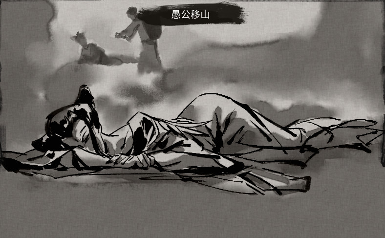
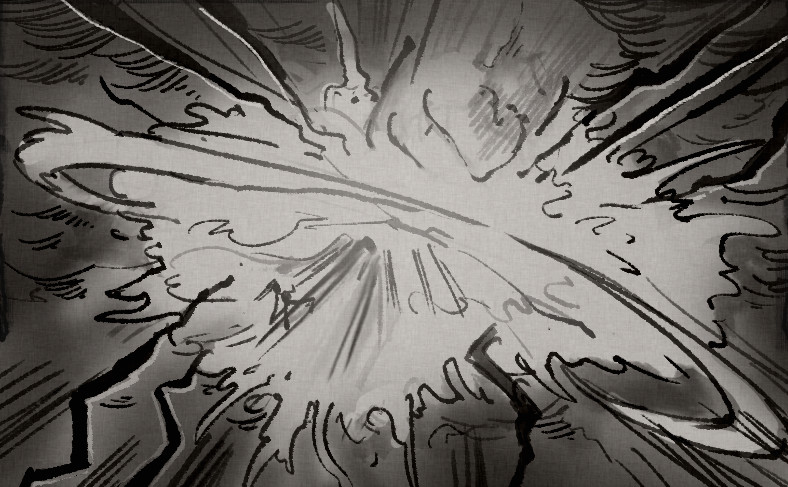
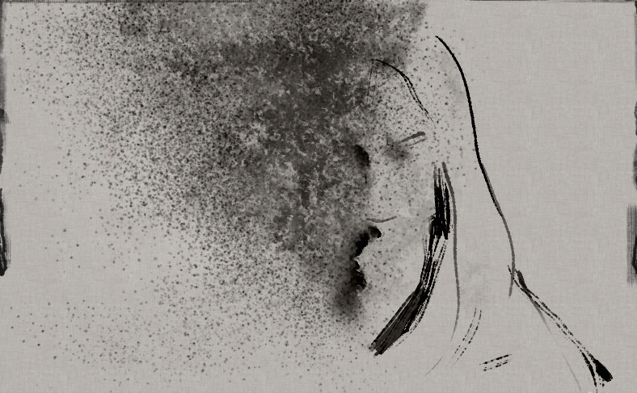
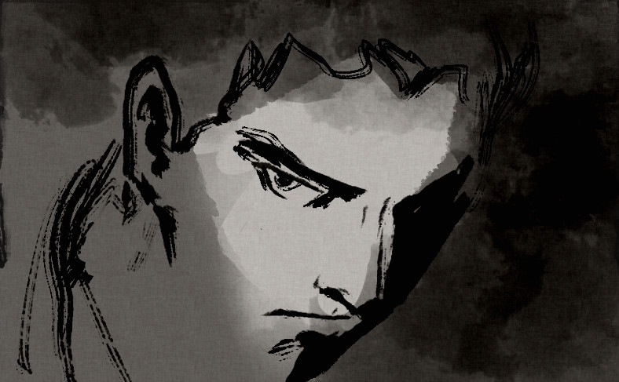
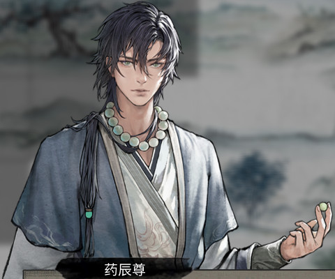
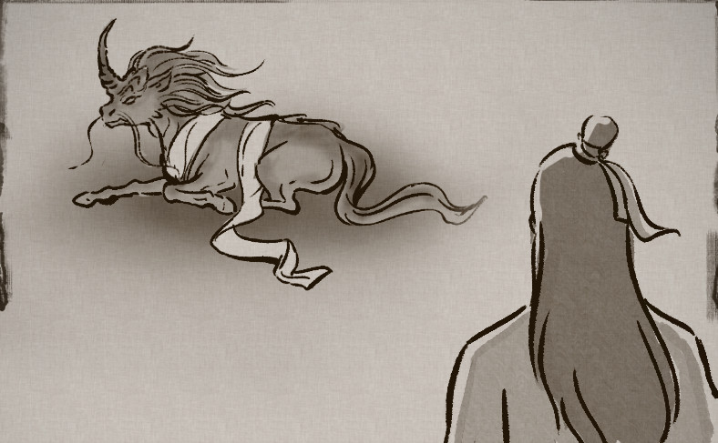
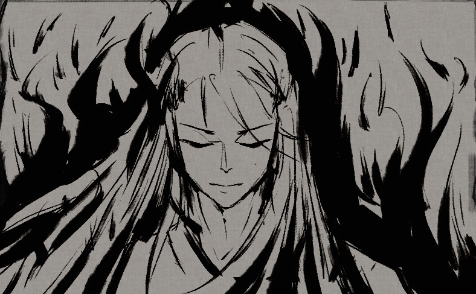
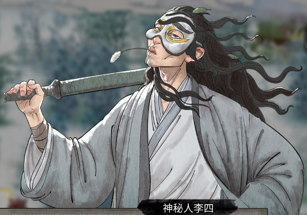

主线
初入八荒
【先天气运1介绍】
【先天气运2介绍】
【先天气运3介绍】
有一天，你在后山玩耍，走入了一片竹林…
竹林中气氛诡异，似乎从未有人来过此处…微风吹动竹林发出“沙沙的响声，仿佛在引导你继续前往深处
你在竹林深处发现了一张石桌，你不由自主地朝着石桌走去…
？？？：你来了？
我：…此地是何处？
？？？：你可以…称这里为——鬼谷。
我：你是何人？
？？？：你可以…称老夫为——张三。
我：这是棋盘吗？
？？？：这盘棋已经下了三千年了，没有开始，也永远不会结束…你亦可以称之为“八荒山海图”。
我：我是谁？我来自哪里？我要去哪里？
？？？：哈哈哈，问得好，问得好！
你是谁？你来自哪里？你要去哪里？
小友，不如我们先手谈一盘如何？我可以让你一子。
昊天眼
双鱼佩
炼妖壶
我：（这是何地？方才那名老者到底是…）
？？？：天…元…山…
我：？！
？？？：到天元山来…我会一直在天元山中等你…
我：你是谁？！天元山在何处？
我：（……声音彻底消失了。）
我：（天元山…先到附近寻人打听一番，看看是否有人知道此地吧。）
我：（…棋盘的正中央，刻着“天元山”的字样。）
我：前方似乎有杀气。
我：来者不善，我得谨慎行动。
药灵：年轻的修仙者哟~要不要尝尝又香又甜的剧毒蘑菇噢？吃完保证会死哦~
药灵：很好吃的哦，看的我都流口水了~~吭呲…哎呀！被我自己吃掉了！！
药灵：哎呦——好惨呐~请不要吃我，呜呜呜……嗯？？这是什么光？好刺眼！
（此时炼妖壶发出耀眼的光芒，将药灵吸入其中）
药灵之灵：呜~呼——刚才发生了什么？感觉自己好像被炼化了一样…！！我的样子？怎么变成这样了！？
我：……
药灵之灵：都是你害的，你赔！呜呜呜……还不快点保护我离开这里！！
我：好强的灵力！还不止一个，究竟是何人？！
正道修士：正魔自古不两立，我既为某宗门内门弟子，今日定要取你性命！
魔道修士：正道？不过是一群以冠冕堂皇的理由行卑劣之事的伪君子罢了！废话少说，要战便战！
我：此人的伤势非常严重，定然是刚才的雷龙所为。该怎么做？
救助
修士：非常感谢道友出手相救。在下【修士名】，是某宗门的内门弟子。我身上有一封推荐信，我见道友还是一名散修，若无其它去处，可凭此推荐信加入我某宗门。后会有期！
修士：谢谢你救了我…我是【修士名】，某宗门的内门弟子。这次出来为宗门寻找有潜力的弟子，谁知碰上了贼人…我这里有一封推荐信，你若没有别的去处，就来某宗门找我吧！后会有期！
杀害
观察
我再想想
我：（方才那人所给的宗门信物似乎发生了一些变化…怎么回事？！）
我：（看来只要有宗门信物，无论身在何处都能寻到此宗门。）
我：（先寻一处落脚点，慢慢收集情报吧。）
我：（不远处似乎有一个城镇，先过去看看。）
药灵之灵：到这里应该安全了，你的葫芦还不赖嘛~叫炼妖壶是吧？待在里边还挺舒服的，我要在这儿种蘑菇！
药灵之灵：刚才我在里边研究了一下，你的这个葫芦好像是可以将一些特定妖兽吸收进来、然后进行炼化。之后他们的外观嘛，就会发现类似我这样的变化。
药灵之灵：感觉还不错，我还蛮喜欢这个新造型的…我决定了！就让你一直做我的护卫吧！！多多利用你这个葫芦，在战斗中好好儿保护我！嘿嘿~
药灵之灵：这个叫炼妖壶的葫芦，除了让你做我的护卫之外，似乎还有许多其他作用。具体我也不太懂，你自己看着研究算了。加油干吧，我的专职护卫！！
前往城镇
前往新达镇中的酒馆，打听消息。
去新达镇的路上领取到主线任务：进入山洞。
在白源区大地图移动一格触发奇遇：造化丹和筑基坐骑。
到达新达镇后领取到主线任务：前往酒馆。
我：先寻一处落脚点，慢慢收集情报吧。
我：不远处似乎有一个城镇，先过去看看。
进入山洞
进入山洞中，寻找妖气的源头。
完成奖励：石沉戒×1、灵石×500、六品化瘀丹×25±、六品聚气丹×25±。
完成后领取到主线任务：前往城镇。
请在任务完成后立刻装备石沉戒、化瘀丹和聚气丹。
我：（这个山洞…在此处都能够感觉到洞中的妖气，要不要进去看看呢？
我：嗯？！这竟是木精的栖息地！
我：…木精们似乎在守护着这个箱子，恐怕是木精不知从何处掳掠而来的物资，让我看看究竟是何物。
我：这…难道是传说中的储物戒？！想不到会在这种地方被我寻到…
前往酒馆
前往新达镇中的酒馆，打听消息。
进入酒馆后领取到主线任务：打听消息。
用得着分这么细吗！
打听消息
向酒馆老板打听天元山的消息。
完成后领取到主线任务：前往村庄。
我：天元山在何处？
酒馆老板：天元山？我想想…
酒馆老板：天元山…那可是传说之地，我确实不知此山的所在地，抱歉…
酒馆老板：但…你若要前往天元山，必定要离开此地，而此地被无数的高山所围绕，若无飞行坐骑根本无法离开…
我：除了使用飞行坐骑，可还有其它方法？
酒馆老板：只要翻越东北方向的太行山或王屋山便可…但从十多年前，便无人能够翻越这二山了。据说是因为山中布下了强大的禁制。
酒馆老板：听闻不远处有一个村庄，其中一位村民打算将大山给搬走，你或许可以过去看看他有什么办法。
我：先到太行山附近看看吧！据酒馆老板所说，此山位于东北方。
前往村庄
前往新达镇东北方的愚村，寻找前往外界的方法。
到达愚村后领取到主线任务：向村民打听消息。
愚公：到底是谁在捣鬼！这已不知是第几次了！
村民：又来了吗？你也别生气了，实在不行就别干了吧。这个事情本来也不是普通人能够做到的，你已经很努力了。
愚公：不可能！只要我还有一口气在，我便与它不死不休！
村民：也许真的有山神在山中某处看着呢，说不定移山的举动惹怒它了。
愚公：哪来的什么山神，只怕是不知从哪冒出来的妖精罢了！如果真的是山神，为什么要用这两座大山困住村子如此之久？
村民：能够使被毁掉的石土草木再生，恐怕也只有神能够做到了。
愚公：大家每天这么辛苦才获得的劳动成果，就这么被它给毁去。我实在是不甘心啊！
智叟：别折腾了，此山根本不是寻常人能够撼动的。即便举全村之力，在我们有生之年根本无法将山移走。
愚公：即便我死了，我的儿子也会继承我的意志，孙子又会继承儿子的意志…我相信终有一日，我们定能将此山移走！
智叟：……
智叟：（如果我说它一直在保护着我们，大家会不会相信呢…）
向村民打听消息
向村民询问愚村中的情况。
完成后领取到主线任务：前往太行山。
我：老人家…
愚公：你应该是修仙者吧？来到此地，可是为了翻越太行山？
我：是的，你在此地生活多年，可知前往外部的方法？
愚公：每隔一段时间，便会有像你这样的年轻人来到此地，想要前往外部世界。
愚公：又何止是你呢？我们也想要到外界去呀…所以我领着家人与部分村民凿山挖石，想要开出一条通往外界的路。
愚公：但近日来，我们发现山中有一个能够操控山中草木砂石的妖怪，它一直在阻挠我们移山。每当我们将山中的砂石挖走了一部分后，在第二日上山时，先前被挖走的砂石竟然又出现了！
愚公：修仙者，此妖物一日不除，我们绝无可能去往外界！我们需要一个如你这般有本事之人，去将此妖物彻底铲除！
我：（掌控山中的一切?听着倒像个山神。）
我：你是愚村的村民吗？
智叟：是的。
我：我来此是为了寻找翻越太行山之法。方才你说有一人在保护着你们，是什么意思？
智叟：我也不确定它到底是不是人类…它虽然一直在妨碍村民移山，但却从未伤过村子里的人。
智叟：多年前…人们都可凭借着自己的本事翻越大山去到外界，自然也就会有外界的强者翻山来到这里。而我们这些毫无修为的普通人，却只能遭受外来强者的欺压，毫无还手之力…
智叟：后来，山中被布下了强大的禁制，任何人都无法穿越太行山与王屋山了。虽然我们无法前往外界，但生活无忧，再也不用遭受强者的欺压了。
我：何处能寻到它？
智叟：我也不知…村中无一人见过其面目。
前往太行山

前往太行山中，调查村民口中的妖怪。
不敌武罗（自身血量低于一半）领取到主线任务：回城镇休整，同时获得重伤6月。
战胜武罗后选择杀了它领取到主线任务：突破筑基境，同时增加50魔道值。
战胜武罗后选择询问前往外界的方法获得武罗遗失的书信×1，领取到主线任务：击杀树妖。
初见就战胜武罗可以直接获得最高资质对应的灰色武技和绝技各一本，也就是原本不敌武罗需要的在后续前往琅琊阁和购买琅琊阁中的功法并进行修炼任务中购买的秘籍。
BUG：初见就战胜武罗会导致酒馆不刷出擎天寨任务。
你进入山中仔细查探了一番，发现此山竟存在一个极其强大的阵法。布阵之人对阵法的理解已然登峰造极，完美的利用了两山连绵环绕之势，阵法与大自然几乎融为一体。
若是此处的主人不想其他人进入山中，只怕是高阶的修仙者来了也无法踏入此地半步。但此时你处于阵法的核心位置，行动起来却是方便了许多，没有受到太大影响。
你经过一番查探后，找到了阵眼所在之处。此处竟处于距愚村不远处的山洞中，只是这处地方极其隐蔽，想必村民们一直都不知道这处山洞的存在。
接近山洞
你刚靠近山洞，便感到了前所未有的危机！
片刻后，一道白影从山洞中朝你袭来。你早有准备，侧身躲过了这一击。
你打量了敌人一番，发现竟是一只武罗！武罗完全不给你喘息的机会，调整一番后便继续朝你袭来！
进入战斗
我：（唔…这样下去我必败无疑！必须要想办法逃走。）
武罗：…
我：（它似乎没有追上来的打算，就这样逃走吧！）
我：（凭我现在的状态，根本无法战胜敌人…先回城镇休整吧。）
回城镇休整
回到新达镇中，前往客栈恢复自身状态。
我：（在回去挑战敌人之前，我得先寻一处灵气充沛的修炼之地，提升自己的修为。）
提升修为
在大地图中寻找一处灵气充沛之地，提升自己的修为，突破当前境界。
当修为达到了瓶颈后，可以服用聚气丸来突破瓶颈。聚气丸可以在城镇中的坊市中购买获得。
完成后如果身处城外，领取到主线任务：前往城镇。
完成后如果身处城内，领取到主线任务：前往琅琊阁。
修为达到练气初期和中期之间的瓶颈后在大地图移动一格触发提示李四的聚气丸，地狱和洪荒难度下选择在李四处购买，其它难度下在新达镇坊市购买。
我：（去城镇中看看是否能寻到适合我的功法吧。）
前往城镇
前往城镇中，购买一本绝技。
到达城镇后领取到主线任务：前往琅琊阁。
前往琅琊阁
在城镇的琅琊阁中，寻找适合自己的绝技。
购买绝技后领取到主线任务：购买琅琊阁中的功法并进行修炼。
注意购买满足学习条件的绝技，也就是相应的资质要足够。
购买琅琊阁中的功法并进行修炼
在琅琊阁中购买适合自己的武技与绝技，成功学习后装备至技能栏中。
完成后领取到主线任务：重新挑战武罗。
注意购买满足学习条件的武技与绝技，也就是相应的资质要足够。
注意学习后要装备上才算完成。
该任务完成后可以顺便在酒馆处领取擎天寨支线。
可以左键或右键按住拖动来收集或摧毁多个【悟】和【魔】，不是一定要一个一个点。
不小心收集到的【魔】只影响获得的学习经验量，不会有其它影响，不会影响魔道值。
注意，学习秘籍会降低心情。
1.学习开始后，会不断有冥思从角色体内向外溢出，这些冥思有可能会变成【悟】或【魔】，并且在一段时间后会自动消失。
2.按住左键到【悟】或【魔】旁边可收集，按住右键到【悟】或【魔】旁边可摧毁。
3.角色需要收集【悟】和摧毁【魔】，未摧毁的【魔】在其消失时会侵入体内。
4.收集的【悟】越多，则学习的效果越好，收集的【魔】则会影响学习的效果。
5.角色的悟性越高，出现【悟】的概率越高。
我：（好！重新返回太行山中挑战武罗吧！）
重新挑战武罗
重新回到太行山，挑战武罗。
不敌武罗（血条被打空）无法完成任务但也不会被杀只是获得重伤6月。
战胜武罗后选择杀了它领取到主线任务：突破筑基境，同时增加50魔道值。
战胜武罗后选择询问前往外界的方法获得武罗遗失的书信×1，领取到主线任务：击杀树妖。
是否要继续挑战武罗？
进入战斗
我：（唔…我败了！必须要想办法逃走。）
武罗：…
我：（它似乎没有追上来的打算，就这样逃走吧！）
你最终战胜了武罗！它此时已无力维持妖身，变回了人类的姿态，此时正面无表情的看着你。
它此时应是无力再对你出手了，该怎么做？
1 杀了它

武罗的生命力正在迅速流失。
她看着周围的景象，回想曾经自己便是负伤后在此地被人所救。
她艰难的抬起头来，朝着一个方向望去，仿佛看见了当年那人又出现在了她的面前…
武罗的生命气息完全消失了，此时太行山与王屋山传来了巨大的声音！你急忙朝着二山的方向看去，此时映入你眼帘的景象是崩塌的大山。随着武罗的死去，山中的大阵也自动破除了，与阵法完全融合在一起的两座山也逐渐消失。
愚村彻底变为了平原上的村落，包围着它的太行、王屋二山已随着阵法的破灭消散在天地间。从此，愚村再无高山所阻拦。
有一部分的村民非常的开心，他们认为没有了大山的阻挠后，村中的灵草与灵酒的贸易会更加便捷，要不了多久便会过上美好的生活。而有些村民则锁紧着眉头，他们不知道接下来会发生什么。
不久后，八荒中谣传着这样一个传说。曾经有一个普通人为了村中的通行便捷选择用人力去移平两座大山，他坚持了无数年却没起到明显的效果，但他始终不放弃。
后来天帝被他的精神所感动了，便派了大力神将两座大山给夷为平地…
愚公：终于能去往外界了…
智叟：老实住在愚村不好吗？为何就非得去外界…
2 询问前往外界的方法
我：我并不想伤害你…我来到此地，只是为了寻找前往外界的方法。
武罗：……
我：你能够操控阵法控制着山中的砂石草木，一定有办法能够让我前往外界吧？
武罗：……
你还想继续询问，但此时武罗转身便逃离了此地。
你正打算追上去，却发现有武罗逃跑时掉落了一本书籍。你将其拾起，离开了山中。
你翻阅了书籍，对愚村中的情况有了一定的了解。
我：（看来要解决当地的情况，必须要寻到百年树妖，取其魂珠…）
击杀树妖
前往击杀树妖消灭树妖，取其魂珠。
击杀树妖后领取到主线任务：提交树妖魂珠。
提交树妖魂珠
寻找树妖魂珠，并将其送到太行山中给武罗。
完成后领取到主线任务：突破筑基境。
上个任务完成后，魂珠就在背包里，别找了。
武罗应该还在山洞中，该怎么做？
给予材料
考虑到武罗对你的敌意不小，于是你将树妖魂珠放在山洞不远处，便离开了此地。
数日后…武罗来到了村中。在众人的围观下，使用你所给予的材料构筑了一个传送阵！
村民们惊喜的发现，可以通过传送阵自由的传送至山的外围，再也不用被群山所困了。
当地的村民十分感谢武罗。他们在明白了是武罗一直在保护着村庄后，对武罗愈发恭敬！将其称为 山神武罗。
我：（通过了这个传送阵，便可以去往外界了吧…）
智叟：我就知道，是她一直在守护着我们！想不到她竟是武罗…
智叟：不久前，她已经离开此地了，似乎要去寻找什么人…她临走前，还让我替她向你道谢。
智叟：虽然我不知是何事，但真的很感谢你愿意帮助她…愿你能在八荒中寻得你的道。
愚公：终于能去往外界了…
智叟：老实住在愚村不好吗？为何就非得去外界…
突破筑基境
将境界提升至筑基境。
筑基方式有以下三种
●天道筑基：
需要集齐火灵气、水灵气、雷灵气、风灵气、土灵气、木灵气，并辅以3种天材地宝，方可进行天道筑基。
●地道筑基：
集齐火灵气、水灵气、雷灵气、风灵气、土灵气、木灵气中的任意3个，并辅以2种天材地宝即可进行地道筑基。
●人道筑基：
使用六品筑基丹或更高品的筑基丹，并辅以1种天材地宝即可进行人道筑基。
突破时辅以天材地宝可大幅提升突破后的属性，筑基可用的天材地宝如下：
关于突破的更多详情可在【逆天改命】界面中查看。
灵气纯度只影响突破成功率，只要提前带两组回血药或带个风身法，突破失败后的雷劫也是能轻松度过的，所以不用追求灵气品质。
筑基成功后记得第一时间换上荒角碧游鲲。
我：（如今我已经有筑基境的实力了，这就出发去寻找人面鸮王吧。）
阻止陌生男子
回到永宁州某处某方的后羿，阻止陌生男子。
进入永宁州后第一次过月月初触发剧情，与圣阳对话后获得奖励：灰色最高资质对应身法、圣阳羽毛。
选择“我岂会让你得逞”之后完成本主线任务。在战斗中败给后羿不会被杀，也没有其它影响。战斗结束后继续对话领取到主线任务：寻找三足乌。
选择“…此事与我无关”之后领取到本主线任务。后羿会留在原地等待玩家触发。
我：（周围突然变得异常炎热，是何物在作祟…）
不远处突然涌现一道黑影，此时正朝你快速奔来。
圣阳：救…救命啊！！
我：这是怎么了？
圣阳：有人想要射杀我和我的兄弟姐妹们！如今我落单，只怕是在劫难逃！
圣阳：求求你救救我！
我：那是何人？他为何要杀你们？
圣阳：我也不知…我们兄弟姐妹在家中实在无聊，便一同前往外面的世界游玩…不料却遭人无故追杀。
岂有此理！那人现在何处？
圣阳：他马上就要过来了！
我：你且先走，待我会会他！
圣阳：好，那便有劳阁下…我必须要走了！
我：先等等…
我：（她方才走得匆忙，似乎遗落了什么东西…）
捡起来看看
我：（那人敢在光天化日之下公然行凶，绝不是等闲之辈！）
后羿：这位道友，可曾有一位身着黑衣的女子途经此处？
我：你寻她所为何事？
后羿：今日…我必须杀了它！
1 我岂会让你得逞！
我：我岂会让你得逞！让我来会会你！
进入战斗
后羿：道友，你且听我一言。
后羿：你所见的黑衣女子，乃是三足乌所变。
我：三足乌是何物？
后羿：先停手，且听我细细道来。
后羿：不久前，八荒世界中突然出现了一群三足乌！这些怪物身上散发着恐怖的热量，它们的出现使得附近的草木枯死、河流干涸。所到之处，皆是生灵涂炭！
后羿：我立誓要铲除它们！可它们实力强大，联手起来我根本无法应对…
后羿：前些时日，有其中一只不知何故落了单，我发现后便星夜追杀!却还是被它逃脱了…
我：这么说来，是被我所耽误了…
后羿：天意如此，道友不必介怀。
我：那群三足乌现在何处？让我去教训它们一番！
后羿：它们就栖息在不远处…三足乌实力强大，以少敌多是不明智的选择。
2 …此事与我无关
寻找三足乌
前往永宁州某处某方的三足乌附近，寻找三足乌的踪迹。
选择“讨伐三足乌”之后完成本主线任务。进入的战斗为剧情杀。战斗结束后触发剧情被传送回后羿处，领取到主线任务：与后羿交谈。
选择“逃跑”之后传送到附近5至15格随机位置。
由于进入的战斗为剧情杀，会消耗掉濒死触发的气运，所以建议在练气期或筑基期就完成本任务。
三足乌·赤炎：人类，这里是我们的地盘！还不快速速退去！
1 讨伐三足乌
我：我若是不退呢？
三足乌·赤炎：好大的胆子！我看你是活得不耐烦了！！！
进入战斗
我：（唔…这三足乌果然厉害。）
三足乌·赤炎：惹怒了我，今日你必将付出代价。
后羿：别愣着，快到这边来！
后羿：先离开此地，讨伐三足乌还得从长计议。
2 逃跑
与后羿交谈
前往永宁州某处某方的后羿，与后羿进行交谈。
完成后领取到主线任务：寻找人面鸮之王。
后羿：道友，我们的实力与三足乌差距悬殊，若是正面交战，想要取胜绝非易事。
我：那依你之见，该如何是好？
后羿：实不相瞒，我过去云游天下，曾有幸得到一件神器的铸造之法。
后羿：若能成功锻造，我便有把握能够射杀三足乌！
后羿：实不相瞒，我过去云游天下，曾有幸得到一件神器的铸造之法。
我：那你为何不从一开始便锻造神器呢？
后羿：你有所不知…既是神器，锻造所需的自然不是凡物。
后羿：多年来，我已成功收集了十之八九，只是尚缺扶桑树枝与人面鸮王的金羽。
后羿：扶桑树乃是传说中的神树，位于八荒世界的东海附近，想要寻到十分不易。
后羿：还有一位实力高深莫测的守护者常年保护着神树。我曾经去过东海，却连神树的模样都没有见到，便被守护者给驱逐了。
后羿：至于那人面鸮王，更是传说中的存在。我只曾听闻它出没在一处隐蔽的山谷中，却从未寻到它的踪迹。
我：我先去寻找人面鸮王，再到东海去看看，扶桑树枝和金羽便交给我吧。
后羿：如此甚好！但此去东海路途凶险，若是没有结晶境的实力，恐怕会有性命之忧…还请量力而行。在此期间，我会尽量阻挡三足乌危害八荒。期待你的好消息。
寻找人面鸮之王
前往永宁州某处某方的山谷，寻找人面鸮之王。
需达到筑基境才能进入副本。
我：（这个山谷诡异得很…待我拥有了筑基境的实力再来探索吧。）
我：（如今我已经有筑基境的实力了，这就出发去寻找人面鸮王吧。）
山谷中阴风四起，空气中弥漫着一股危险的气息…
进入山谷探索
我：（这一定就是人面鸮之王了，我必须击败它。）
我：（不愧是传说中的异兽，真不容易…）
我：（接下来便只差扶桑树枝了。在去东海之前，我最好先将修为提升至结晶境。）
突破结晶境
突破结晶境后地图上会立刻刷出仙祠。
●结晶：
使用六品化晶丹或更高品的化晶丹，并辅以4种天材地宝方可进行结晶。
突破时辅以天材地宝可大幅提升突破后的属性，结晶可用的天材地宝如下：
关于突破的更多详情可在【逆天改命】界面中查看。
结晶成功后领取到主线任务：扶桑？？。
我：（如今我已经有结晶境的实力了，这就出发去东海寻找扶桑吧。）
支线
不可重复触发的非必过事件归类到“支线”。
前往擎天寨
前往擎天寨，寻找蔡家女子。
选择“细问其中缘由”→“信他所言，转身离开”结束支线，没有奖励。
其它选择将进入战斗，击败山贼二当家后获得灵石×300、朱钗×1。之后选择“你若有仙缘，又岂会打家劫舍”结束支线，没有后续奖励。
其它选择将进入战斗，击败山贼二当家后获得灵石×300、朱钗×1。之后选择“你且说说看”获得灵石×500、二当家的书×1、未知的玉符×1。领取到支线任务：与二当家的母亲对话。
选项选择对最终奖励的影响见擎天寨事件完毕后第二个月。
我：如何赚取灵石？
酒馆老板：你可以通过击杀妖兽获取材料，坊市会以合适的灵石收购你的材料；加入宗门后，每年宗门都会给你提供一定的灵石助你修炼，你在宗门中的地位越高，得到的灵石就越多；完成城镇悬赏榜上所发布的任务，也可以收获不少报酬。
酒馆老板：不过，你来得正是时候！蔡府的千金被附近的擎天寨掳了去，你若能将其从山贼手中救回，便可以获得一笔灵石。
酒馆老板：修仙者对付几个山贼应该不在话下，这可是难得的好机会!
接受委托
酒馆老板：擎天寨便在城镇附近，山贼将人掳走已有一段时间了，你抓紧时间吧！
你来到了擎天寨，寨中的人似乎察觉了你的到来，走出营寨欲与你交涉。
与之交涉
为首的那人身着寨服，手持巨刃。
？？？：你是何人？来到擎天寨有何指教？
我：若是识相，便赶紧将蔡家女子放走。否则，今日我必将灭了你这擎天寨！
？？？：她…已经不在了。
我：（此言何意？…莫非是…刚烈自尽？！）
1 屠灭擎天寨
你击败了山贼，进入营寨中搜查了一番…
你在营寨中收刮到了一些灵石与一个看起来价格十分昂贵的珠钗。
你走出营寨，正打算离开…此时却发现二当家还没完全断气，他正神情恍惚的盯着你手中的珠钗…
二当家：…我命数已尽，却还有两桩心愿未了…我愿以仙缘为代价，请求阁下替我完成…
11 你且说说看
二当家：…其一，我家中尚有一老母。每隔数日，我便会托人带些灵石给她…而如今我却再也无法尽孝…
二当家：囊中的灵石便是我所有积蓄，有劳阁下替我转交。还有…替我对她说一声对不起…儿子再也无法孝敬她了…
二当家：…其二，将此书连同你手中所持的珠钗一并交予蔡姑娘…此书乃私信，望你能守礼。
二当家说完，又从怀中取出一道玉符…
二当家：这便是我所说的仙缘…乃是仙人梦授于我祖父，并留下箴言“造化之初，符光引渡，五德兼备，始得仙缘。”
二当家：我家中三代人皆不解其意…如今我便将其交予你…
山贼说完，便断了气…你看着擎天寨中的遍地横尸，你决定…
111 安葬死者，入土为安
你将擎天寨的山贼纷纷安葬后，离开了此地。
112 离开此地
你离开了擎天寨，留下了遍地的横尸。
12 你若有仙缘，又岂会
打家劫舍？
二当家：…此言在理！我为贼为寇乃是不争的事实。既如此，便不劳烦阁下了…
山贼二当家说完，便断了气…擎天寨中只留下了一片横尸。
2 细问其中缘由
二当家：我是擎天寨的二当家，首领先前听闻蔡姑娘貌美，便聚集一伙人将其掳掠…
二当家：我曾求过首领放过她，可此时的首领已被色欲熏心…不顾情谊，执意强为！
二当家：所幸有高人途经此地，听见了蔡姑娘的呼救声…那人看清形势后，便将首领一剑给斩了…
二当家：我也不知那是何人，只听闻他自称“剑红尘”…此时，想必这位侠士已将蔡姑娘护送回到府中了吧…
21 这贼人定是在开脱，
灭了擎天寨
后续与前面的“1 屠灭擎天寨”后续相同
22 信他所言，转身离开
你相信了山贼的话，转身离开了擎天寨。
与二当家的母亲对话
前往新达镇东北方的愚村，寻找山贼二当家的母亲。
选项选择对最终奖励的影响见擎天寨事件完毕后第二个月。
你依山贼之言来到村中，寻到其母…
1 给予250灵石
（需要 灵石×250）
你留下了一半的灵石，仅将250灵石给予了老人…在老人疑惑的眼神下，你大步离开了此地。
2 给予500灵石
（需要 灵石×500）
你遵照与山贼的约定，将500灵石给予了他的母亲…老人从你口中听闻儿子的死讯后，悲痛不已…
3 给予800灵石
（需要 灵石×800）
“你儿今日无暇，便托我带了些灵石来探望…”
你见其年老无依，便给予了老人800灵石…
你将老人安顿好后，便离开了此地。
4 转身离开
在老人疑惑的眼神中，你转身离开了此地…
与蔡家女子对话
前往新达镇，寻找蔡家女子。
选项选择对最终奖励的影响见擎天寨事件完毕后第二个月。
BUG：选择“暂且离开”将导致本支线直接消失，之后也无法触发任何后续！
你依山贼之言来到了城镇中，寻到了蔡家女子…
1 交出珠钗与二当家的书
（需要 二当家的书×1、
珠钗×1）
你将珠钗与二当家的书一并交给了她…她看完书中的内容后，面无表情的转身离去。
目送着蔡家女子离开后，你也离开了此地。
2 只给她二当家的书
（需要 二当家的书×1）
你只将二当家的书交给她，自己留下了珠钗…她看完书中的内容后面无表情的看了你好一会，便转身离去。
目送着蔡家女子离开后，你也离开了此地。
3 暂且离开
此选项有BUG！勿选！
擎天寨事件完毕后第二个月
屠灭擎天寨后选择了“安葬死者，入土为安”、与二当家的母亲对话时选择了“给予800灵石”、与蔡家女子对话时选择了“交出珠钗与二当家的书”、并且全程不查看二当家的书，第二个月月初会获得一本【蓝色及以下品质】的随机资质的【密卷或神功或大法】以及一本最高资质对应的橙色品质武技。
仁义礼智信五点，都满足才能获得最好的后续奖励。
仁义礼信四点，缺一个只给一本【绿色及以下品质】的随机资质的心法。缺一个以上没有后续奖励。
不仁不义不礼不信四点，有两个则过月月初会扣一半血，有两个以上则过月月初还会获得重伤6月。如果过月之前血量不足一半，过月会被炸死，而且不知道是BUG还是刻意的设计，这种死亡会跳过神器的保护。
与二当家的母亲对话时选择“给予500灵石”既不算【义】也不算【不义】。
先前那山贼给你的玉符突然发出耀眼的光芒。
你的耳边突然响起一道传音…
？？？：收敛尸身是谓仁，多资赡养是谓义，不窥私信是谓礼，勘破箴言是谓智，依愿给物是谓信！五德兼备者，可得吾之传承！
随后，玉符便化作一个匣子出现在你手中！
先前那山贼给你的玉符突然发出耀眼的光芒。
你的耳边突然响起一道传音…
？？？：收敛尸身是谓仁，（多资赡养是谓义，）不窥私信是谓礼，勘破箴言是谓智，依愿给物是谓信，可惜尚缺一义（仁礼信）！但…相逢便是缘分，今日便赐予你一场造化！
随后，玉符便化作一个匣子出现在你手中！
先前那山贼给你的玉符突然发出耀眼的光芒。
你的耳边突然响起一道传音…
？？？：任其曝尸，私扣钱财（偷窥私信，私藏珠钗），是为不仁不义（不礼不信），不*之人不配拥有吾之传承！
随后，玉符中灵力翻涌！片刻后，一道强大的冲击从玉符中爆开！你因此而受伤！
先前那山贼给你的玉符突然发出耀眼的光芒。
你的耳边突然响起一道传音…
？？？：道德败坏之人不配拥有吾之传承！
随后，玉符中灵力翻涌！片刻后，一道冲击从玉符中爆开！你身受重伤！
造化丹和筑基坐骑
白源区大地图移动一格触发。
造化丹全档只此5个。坐骑是筑基期最好的，别忘了刚筑基立马装备上。
你走在路上，乌云突然密布，一个巨大的漩涡缓缓浮现……
随着一声清脆的“咚”响，一个闪耀着金色光芒的宝箱落到你的面前……
我：（竟有如此好运！难道我就是传说中的天命之子？！）
打开看看
宝箱突发强光，随之炸裂消失，你的手中出现了一些物品……
神秘洞窟参悟心得
在大地图移动一格有概率在附近5至10格刷出神秘洞窟、获得秘籍后才会刷下一个，一共3个。
3个洞窟获得的奖励分别为：紫色最高资质对应身法×1、紫色式×1+紫色诀×1、紫色最高资质对应神通×1，分别与下面的三段文本对应。
刚进入永宁州很快就会刷出该奇遇，可以双击大地图上远处某点进行移动，刷出神秘洞窟时会打断移动，此时存档并照亮附近5至10格区域就能找到。未找到就读档继续前进。
你进入一处神秘洞窟，只见石壁上篆刻大量古奥文字，你细细研读发现那竟是前人留下的参悟心得。
你发现了一处年代久远的神秘洞窟，石壁上以利器篆刻文字，但部分字迹已经脱落，导致文理脱漏。不过经你细心推敲，你仍然从中获益良多。
你踏入一处洞窟，只见石洞之上布满密密麻麻的文字，乍一看却是一些功法的心得。不过年久日深，文字已大量脱漏，你只能从中参悟一些心得。
你想将所有文字全部记录下来，好日后细细参研，但石壁突然酥化损坏，所有字迹霎时间一并损毁。
圣山之森
在永宁州大地图移动概率触发。
“深入探索一番”→“挑逗玩耍”获得随机六道灵气之一
在和灵鹿玩耍之后，选择“跟灵鹿走”或“先寻宝”都能获得奖励，由此可见，自行寻宝找到宝物并非“误打误撞”。
你途径一处森林，你感受到了其中深处似乎有一种奇异的力量。
1 这股力量如梦似幻，
深入探索一番
你进入了森林深处…突然，有一只可爱的灵鹿靠近了你，并且对你毫无防备。
11 此鹿乃上等灵物，
先捉住再说
你正想将其生擒，整个人便失去了意识…在你清醒过来时，发现自己又回到了先前的森林中。
12 挑逗灵鹿，与其一起玩耍
灵鹿似乎对你颇有好感，与你玩耍了好一阵…
在它打算离开时，回头看了看你，似乎在示意你跟着它一起走。
121 跟灵鹿走
灵鹿带着你穿越森林，来到一个山洞面前后，便化作灵气向四周消散而去…
你进入了山洞中，寻到了六道灵气之一。
122 此地的宝物还未
进行寻搜，先寻宝
在你四处寻找出路时，误打误撞的发现了一个宝物。
2 这股力量如梦似幻，
还是趁早远离
你敏锐的察觉到了其中蕴含的危机，快步的离开了此地…
坊市老头·永宁州
坊市中点击购买概率触发。
获得灵石3300±。
可以在坊市重复点击购买按钮来触发此奇遇。
你发现一个矮小的老头儿正刨挖一堆杂物，他刹那间警觉过来并凝视你。
糟糕，被发现了！这远古之际，八荒所有东西都不是这样收起来了，后来人心变坏，这才导致……唉，这些你都不懂，反正你看见的这些东西不准向任何人说！！
这个矮小老头将一些宝物塞到你手上，然后匆匆取走刨挖物中的一件东西，左右张望一下便匆匆离开了。
坊市老头·华封州
坊市中点击购买概率触发。
获得灵石4300±。
可以在坊市重复点击购买按钮来触发此奇遇。
你发现一个矮小的老头儿正刨挖一堆杂物，他刹那间警觉过来并凝视你。
咦，是你！似我这等地仙竟被你这凡胎肉眼动识察觉？我事先声明，我这不是偷窃啊！你要知道……唉，这个给你。就是……别、别说啊！
小家伙将一堆宝物交到你手，便匆匆忙忙离开了……
宝物·永宁州
位置：永宁州雷泽边（经：70± 纬：21±）。
获得灵石2200±。
你发现前方有宝物若干堆成一座小山，正要上前一探，未料一个小老头探头出来盯着你。
玄令地仙：你竟然能看见我？这是我从天幻仙祠偷半块砖化成的材料。我分你一点，给我保密哈！就这么定了！兄弟们给我交代的任务一定要完成的！
这个古怪的小老头儿将宝物交给你，匆匆忙忙的走了……
宝物·华封州
位置：华封州（经：133± 纬：59±）。
获得四品最高资质对应灵果×10。
你发现前方宝物闪闪烁烁，一探之下，竟发现一个小家伙也迅速转头盯着你。
素令地仙：没想到被你发现了，此事必须谨慎秘密，请一定不要揭穿我被发现的事！作为补偿，这些给你。
小家伙将一堆宝物交到你手，便匆匆忙忙的离开了……
冰原白发少女
在永宁州大地图移动触发，附近会刷出该图标，刷出时视角会移动到该图标。
选择“喝点米酒化解心中寒气”后领取到任务给少女买米酒。
选择“水火互克修炼火属性的功法”后领取到任务送给少女秘籍。
选择“小丫头，你直接回极北严寒之地不就行了”后进入倒计时20秒的战斗（冰原少女无法被击败），结束后获得：水灵根+3、雷灵根+3、风灵根+3。
你看到一片冰原，随着走近感觉到周围温度瞬间降低了数个等级，只是这样的温度对现在的你来说也算不上什么。
你对这个明显不同于周围环境的的冰原感到好奇，走了进去。一路上看到许多动物的尸体，其中不乏小有实力的妖兽。
你上前查看发现，这些生物都是被寒冰笼罩全身血脉冻僵而亡。
你继续往前走，直到看到一个容颜绝美的白发少女正倚靠在一颗树旁掩面抽泣，少女脚边还躺着一些冻死的鸟兽。
你上前相问。少女抽泣着说：“自从出生开始，我所到之处尽皆冰封，那些可爱的小动物都冻死了…嘤嘤嘤…”
你不忍看着少女这般伤心，便提出要帮助她解决烦恼。白发少女瞪大眼睛说：“你真的能帮助我？”你向她建议。
1 喝点米酒化解心中寒气
少女一脸狐疑地打量着你，随即就要起身飞向周围的凡人城镇，你大惊，慌忙阻拦，告诉她你会为她带米酒来。少女听了你的话回到冰原中心，你也离开了冰原。
我：（听说附近小镇的酒馆有卖米酒，只是买的人多，数量有限价格昂贵，只怕至少要1000灵石才能买到…）
你听到少女自言自语的声音“好想早点和小动物们一起玩。。”
2 水火互克
修炼火属性的功法
少女觉得你说得有些道理，便让你带几本火属性功法秘籍给她。
少女远远看到你，赶紧跑了过来。“你带来火属性心功法秘籍了吗？
还在收集 请再等几日
少女有点失望，但还是点点头，回到了冰原中心，避免伤害到附近的生灵。你离开这里，继续收集火属性功法秘籍。
3 小丫头，你直接回
极北严寒之地不就行了
少女杏眼圆睁，怒气冲冲地看着你，说道：“你知道我费了多大劲才溜出来的吗？”说罢抬手卷起一阵寒冰向你飞来。
天空突然阴沉，转瞬间大雨滂沱，卷云中伸出一只巨手，把少女拖了进去。
你正待去救人，只听卷云中传来少女声音“爹，家里闷死了让我出去玩会儿。。爹。。！”
原来少女是偷跑出来玩的，跟你战斗时使用灵力过猛，暴露了自己的踪迹，被其族长发现。
你正不知所措，卷云翻滚间好似发生了什么，随后一道闪电直直朝你劈了过来，像是在对少女的暴虐行径做出补偿。
少女被带走，你也离开了这片冰原。
给少女买米酒
给少女带一坛米酒化解心中寒气。
进入城镇酒馆，花费1000灵石购买米酒。将米酒带给少女获得：水灵根+5、雷灵根+5、风灵根+5。
选择“我再考虑考虑”后选择“下次再来”，下个月才能触发购买，无其它影响。
老板，给我来一坛上好米酒。
上好米酒，一坛1000灵石。
1 我买了
（需要 灵石×1000）
你回到冰原，将米酒交给少女。
少女接过痛饮，几口下肚以后，小脸变得红扑扑的。
天空突然阴沉，转瞬间大雨滂沱，卷云中伸出一只巨手，把少女拖了进去。
你正待去救人，只听卷云中传来少女声音“爹，家里闷死了让我出去玩会儿。。爹。。！”
原来少女是偷跑出来玩的，喝醉之后没法用灵力掩蔽自己的行踪，被其族长发现。
你正不知所措，卷云翻滚间好似发生了什么，随后一道闪电直直朝你劈了过来，像在感谢你对少女的照顾。
少女被带走，你也离开了这片冰原。
2 我再考虑考虑
哎哟，这位客官，这是本店最后一坛米酒了，只要1000灵石，您要是不要的话，我可卖给别人了。您要买的话得等到下个月了。
21 好吧，这坛我买了
（需要 灵石×1000）
后续同“1 我买了”
22 下次再来
说完你离开了酒馆。
送给少女秘籍
送给少女三本火属性功法秘籍。
完成后获得一本橙色筑基随机资质绝技。
少女远远看到你，赶紧跑了过来。“你带来火属性心功法秘籍了吗？
1 带来了 你看
少女发出欢快的声音，接过秘籍开始修炼起来，一时间少女全身冒出大量的蒸汽，仿佛在锅炉中蒸煮一般。
片刻后，少女睁开双眼，遗憾的是修炼火属性功法并没有起到多大作用，不过为了表示感谢，她把一本筑基境秘籍送给了你，随后离开了这里。
眼看少女飞走，你也只好收起秘籍离开了这里。
2 还在收集 请再等几日
少女有点失望，但还是点点头，回到了冰原中心，避免伤害到附近的生灵。你离开这里，继续收集火属性功法秘籍。
酒馆男女争吵
在永宁州进入酒馆概率触发。
选择“欣然同意”获得后天气运力大无穷3月。
选择“委婉拒绝”结束奇遇。
你刚在酒馆坐下，便听到隔壁桌有一对男女正在争吵。
男：夫人，我不过就是晚来了一会，何必生这么大气？
女：今天什么日子你不知道，让我在等你这么久！
男：我怎会不知，可一刻钟并非很久，上次我可是在烈日下，足足等了你三个时辰。
女：那都是多久前的事了，你居然还记着，你怎如此小心眼。
男：什么叫我小心眼？我要小心眼，当时就会跟你现在一样闹脾气了，我只是觉得，既然我都等过你那么久了，你等等我又没什么……
女：你意思就是我小心眼，我不该在这里跟你斤斤计较是不是？
男：不是……我意思是这件事我们可不可以让它过去了，好好给你过这个生日。
女：【男名】，原来我在你心里竟然是这样的，你太让我失望了。
男：不是啊！我只想问你，到底要怎样你才能不生气？！
女：怎么了，现在就对我不耐烦了？是不是巴不得跟我解除夫妻关系，然后再去找一个？
男：【女名】，你这说的都是些什么胡话，我怎么会是这样的人！
女：你，你居然敢凶我，这日子没法过了！

女子话音刚落，便跑出了酒馆，留下男子一人。
男子提起酒壶，向你走了过来。
男：道友，可否邀你喝一杯？
1 欣然同意
我：萍水相逢即是缘，道友请坐。
男：唉，还是我等男人之间好沟通，女人的心我从来就不曾看明白过。
我：明不明白，其实在于你用不用心。
男：道友这话，似有深意。
我：方才二位争吵，在下不慎听到，大概也明白其中曲折，敢问道友，往日你是否也迟到过？
男：一些时候有过。
我：那时候的尊夫人是否如今日这般生气呢？
男：那倒没有，最多只是让我下次别迟到。
我：那你觉得这次为何如此生气？
男：道友是指因为生日？但没必要这般生气吧，又没迟到多久，我觉得没有什么影响啊。
我：这便是道友的误区所在了，尊夫人在乎的，并不是你迟到这件事，而是这件事背后的问题。
男：道友可否说明白些……
我：敢问道友，你和尊夫人初相识的时候，相约可会迟到？
男：那可不敢，我要是迟到了，要给她留下不好印象的。
我：那为何现在敢迟到了？
男：我……
我：道友想必已经明白了，其实尊夫人说那么多，归根到底，是因为她觉得你对她没那么用心了。
男：道友说得是，回想起来，以前我们还未结为夫妻时，她生日我都是早早就做了准备，更是不可能迟到……
我：不错，我有四个字送给道友，希望道友时不时用来提醒自己。
男：敢问道友是哪四个字？
我：不忘初心。
你的话音刚落，【男名】便猛然站了起来。
男：今日道友一言，让我茅塞顿开，我这便去将夫人追回来，这酒便请道友喝了。
2 委婉拒绝
我：在下不太习惯与别人同桌饮酒，抱歉。
男：是在下唐突了。
男子说完话，便晃晃悠悠地带着酒壶往外走去。
小迷妹·路遇
筑基及以上修为在大地图移动概率触发。
出手相救后获得小迷妹×1。
小迷妹境界固定比玩家低一个境界，且固定为境界初期阶段。
高境界触发时因小迷妹境界较高，年龄也会较高，可能会显得违和。
你正在赶路之际，突然看到前方有一女子正被人追杀，那女子看到你，神色一变，迅速向你跑来。
女子：道友，此人趁我受伤之际，想逼我与他双修，求你救救我……
男修：我们道侣之间在吵架，劝你别多管闲事。
女子：他骗人，我根本就不认识他。
1 出手相救
我：哼，何方宵小在此欺负一女子。
男修：既然你不识好歹，就别怪我心狠手辣了。
进入战斗
女子：多……多谢道友出手相助。
我：你是何人，那人为何追杀于你？
女子：小女子名为【女修名】，乃一介散修，今日若不是有幸遇见道友，只怕……只怕我今日就要……
我：既如此……
女子：道友救命之恩，来日必报，容小女子先行告退。
2 不救
你想了想，直接离开了。
男修：算你识相。
小迷妹·坊市
筑基及以上修为进入城镇坊市点击购买概率触发。
出手相助后获得小迷妹×1。
有时候触发后想刷小迷妹回档了，再反复点击购买也不会触发了。
你刚进入坊市，就听到有女子大喊“抓贼”，循声望去，你看到一男一女正在前后追逐向你跑来。
女子：道友，快帮我拦住前面那小贼。
男修：滚开，敢拦我让你没好果子吃。
1 出手拦住
我：光天化日之下行此等偷窃之事，我岂能熟视无睹。
男修：既然你这么爱管闲事，那就去死吧。
进入战斗
女子：多……多谢道友抓住此贼。
我：下次你可要注意了。
女子：多谢道友提醒，小女子名为【女修名】，乃一介散修，这小贼偷走的储物戒中便是我的全部财物，若不是道友最后拦住这贼子，我……我真不知该如何是好。
我：如此……
女子：道友之恩，他日必报，容小女子先行告退。
2 不拦
你想了想，让开了位置。
男修：算你识相。
小迷妹·兽巢
击败大妖兽概率触发。
出手相助后获得小迷妹×1。
必须是地图上有大妖兽图标的大妖兽，比如炼狱当康、九霄雷神等。
你击败异兽后，在其洞府中发现有一女子被困在此处，你凝聚灵力破开禁制，将她救了出来。
女子：你……你竟然打败了它！
我：你是何人，为何在此地，莫不是……
女子：道友别误会，小女……小女子名为【女修名】，乃一介散修，受伤后误入了此等龙潭虎穴，若不是道友大发神威，击杀这异兽，只怕我早晚都要葬身于此。
我：如此说来……
女子：道友救命之恩，来日必报，容小女子先行告退。
1 有缘再见
女子：嗯……
2 不必报恩，我无意与你有过多关联
女子：好，好吧……
君愿知
筑基及以上修为在永宁州移动。
出手相助后获得小迷妹×1。
逃走结束支线。
你来到一片湖畔，发现不远处立有一名少女。少女站在青草间，在轻风吹拂下，裙摆微微摇动。她正注视着湖面上自身倒影的涟出神，似乎并未注意到你。
正当你好奇少女在此处作何，一只巨蟹从湖中冲出，向少女袭来。
1 出手相救
2 逃走
你修为有限，自忖难敌巨蟹，在被巨蟹发现之前，你快速逃离了此地。
大能传功
玩家境界在筑基境且时间在5年以后，在永宁州或雷泽区域移动触发。
“接受传功”后突破至结晶境，本次突破可选择特殊逆天改命：逍遥游。然后“拜其为师”可获得登仙师父×1、皇极天剑×1。
大能传功的时间随机为5到10年某月，但是开档后这个时间就固定了。
筑基初中后期接受传功后的属性相比玩家筑基初期时的属性增加：
攻击: 46|37|39 防御: 31|25|27
体力上限: 1017|830|888 灵力上限: 139|118|133 念力上限: 192|171|186
会心: 104|75|79 护心: 52|41|44
暴击倍数: 70%|50%|50% 抗暴倍数: 70%|50%|50%
功法抗性: 37|23|23 灵根抗性: 37|23|23
移速: 20|10|10 寿命: 80|40|40 道点: 42|30|30
其中，筑基后期接受传功增加的属性与1红3橙突破增加的属性相同。
属性增加值对比：初期高于后期、中期略低于后期。
“拒绝传功”后“接受赠礼”以及“接受传功”后“拒绝拜师”，都实际不会收到任何赠礼，这与对话内容不符。
选择逆天改命后的蓝色粒子特效会变成静态且后续对话结束之前不会消失。
正行走在路上的你，突然感觉头顶之上传来极强的威压，让你动弹不得。
你艰难地抬起头，只见天空之上，竟有两名看不清修为的大能修士在对峙。
登仙女修甲：【登仙女修乙名】，新仇旧怨，今日便彻底了结了吧。
登仙女修乙：哼，【登仙女修甲名】，今日不是你死，便是我亡。

随着两人的话音落下，顿时狂风骤起，天地变色，大战一触即发。
观看战斗
败者：咳咳，我输了……
胜者：你也有败在我手下的一天！
败者：你要杀便杀，莫要废话。
胜者：你让我杀，我偏不杀。
胜者：元魂已碎之人，谁出手也救不活了，我要你好好感受，这种看着自己走向死亡，却无力回天的感觉！哈哈哈！
一声大笑过后，【胜者名】御空而去，留下【败者名】在原地。
败者：旁边那小子，出来吧，莫藏了。
我：难道此人在说我？
A 既然发现，那便露面。
B 他在诓我，暂不回应。
败者：筑基境的小辈，虽然我元魂已碎，但修为没完全消失，莫不是要我亲自抓你出来！
我：看来果然被发现了！
选择露面
我：前辈，晚辈只是偶然路过，故在一旁观战，并没有恶意……
败者：你不过筑基境，便是真有恶意，又能如何？何况登仙修士的感知范围极广，你靠近的时候，就被察觉了。
我：那为何刚刚那人不……
败者：对那人来说，不到登仙境，终是蝼蚁，你会在意蝼蚁的感受和想法吗？
我：……
败者：咳咳，我叫你出来，便是有一份机缘给你。
我：机缘？
败者：想必你也听到，我元魂已碎，但修为残存不少，若将些许本源灵力和感悟灌注于你，可让你直接突破到结晶境，并且不影响你未来的修行，你可愿意接受？
A 接受传功
败者：你就这么答应了，不怕我害你？
我：若前辈想害我，早就可以动手了
败者：不错不错，胆大心细，如此我倒更是相信你能办到那件事了。
B 心有顾虑
我：前辈，晚辈虽然境界低，但还是知道一句话，这天下没有免费的午餐。
败者：你小子心眼倒是多，如此我倒更是相信你能办到那件事了。
我：那件事？
败者：我将修为传给你，并无恶意，但作为交换，我希望你在五十年内为我寻来一颗九转还魂丹，你可愿意接受？
此物何用？
败者：此丹药可以让我重塑肉身。
我：可那人不是说，前辈元魂已碎……
败者：那人没说错，但登仙之人，岂能没有后手。我早年在一处上古秘境之中得到一本秘法，炼出了第二元魂。
败者：和那【胜者名】一战，我只是第一元魂碎了，这第二元魂还保留着一丝，此元魂较为特殊，可以持续五十年不消散。
我：原来如此，那此丹药如何获得？
败者：待你羽化之后，自会知道此物获得之法。
我：羽化……我如今方才筑基境，前辈为何不直接让羽化好友前来相助……
败者：来不及了，此番交战本就在意料之外，再加上那第二元魂我初炼不久，非常微弱，连我的神识都负担不起，我很快就要进入彻底沉寂的状态。
败者：一旦彻底沉寂，非我神识最后记忆之人，都无法将我唤醒。
若前辈未遇到我……
败者：那我这第二元魂也无用了，无人可将我唤醒，纵然五十年也没有意义，不若一死。
……
我：所以我若要帮到前辈，便意味着我需要在五十年之内修炼至羽化之境？
败者：不错，虽然你现在方才筑基境，却是天生的修炼种子，身后气运更非常人可比，五十年内羽化，对你来说，并非不可能之事。
我：若我五十年内不能为前辈寻来这九转还魂丹呢？
败者：人与人之间，一旦建立联系，便是有了因果，境界越高，因果之力的影响便越强。
败者：今日你若应我这件事，这便是因，他日你若做不到这件事，那便是果。由于我乃登仙修士，这因果之劫恐也会应验在你登仙之后。
会是何劫难？
败者：每个人都不相同，这我无法告知于你。总而言之，此事对你来说，是机遇与危险并存，你好好考虑一番，我不会强求。
1 接受传功
我：在下愿意接过这一份因果。
败者：我没看错你，时间不多了，现在便开始接受我的本源灵力吧。
败者：咳咳，很好，一切都很顺利。
我：多谢前辈。
败者：前辈吗……
四方俱静，【败者名】眉眼低垂，似乎陷入了久远的回忆之中。
败者：你可知，从我踏入仙道第一天，我就选择了散修这条路，便是想着一个人自由自在，没有多余的牵挂，不被繁琐的门规束缚，不必因为在乎别人而委屈自己，世界广阔，随心所至。
败者：后来我发现，自由也是有代价的，没有宗门做后盾，没有高境界的修士庇护，我要不断向上修行，就要比那种宗门弟子，大能子女付出更多倍的努力才行。
败者：他们只要按部就班地完成宗门任务赚取宗门贡献，或者主动跟父母索取，便可以得到我历经千辛万苦才拿到的天材地宝。
败者：当我一遍又一遍从妖兽身前败退之时，也曾动摇，如果一开始我不这么倔强的坚持当散修，是不是就不用经历这么痛苦的一切，境界反而会突破得更快，实力也会更强，拥有的一切会比现在更多。
败者：但如今，真的到了将死这一刻，我反而无比的坚定自己当初的选择是对的。
败者：回首望去，我的修仙之路没有庸庸碌碌，也没有千篇一律，足够丰富，也精彩万分，纵然真的面对死亡，我也不会有什么遗憾。
败者：若真要说有什么遗憾，便是我没有留下一道传承，人嘛，终究还是希望在这个世界可以留下一点东西。

败者：【败者名】抬头望向你，原本暗淡的眼神出现了一丝光彩。
败者：【玩家名】，你可愿拜我为师？
11 拜其为师
我：在下愿意拜前辈为师，师父在上，请受徒弟【玩家名】一拜。
师父：哈哈，老天待我不亏，让我在这一刻收到徒弟，就算以后重塑肉身失败，这辈子也算值了……
话音刚落，【败者名】的身体便开始渐渐破碎，她面色平静，等待着彻底归于沉寂。
师父：你我既已为师徒，我也不愿再用那因果约束于你，影响你修行。
师父：修仙一途，欲速则不达，徒儿你本就天赋异禀，只需守住本心，一步一步地打好根基，突破便是水到渠成之事。
师父：我身上你能用的东西不多，这皇极天剑给你，就当为师给你的见面礼。
我：师父……
师父：不要觉得师父小气，散修嘛，身上的宝贝没法和大宗门比。
我：徒儿没有……

淅淅沥沥的雨丝从空中落下，肉身近乎消散的【师父名】看着头顶那穿过身体的雨滴，说出了最后一句话，回响在你耳旁。
败者：徒儿，你看这雨，由天而生，至地而死，每一滴雨看到的风景都不相同，这中间的过程，又何尝不是人生。
我：师父……

成功结为师徒关系
12 拒绝拜师
我：前辈，在下现在还不想拜师，抱歉……
败者：无妨，咳咳，本就将死之人，能得你一诺，已然不错，是我要求太多了。
败者：这给你，也算助你修行了。
我：谢过前辈。
话音刚落，【败者名】的身体便开始渐渐破碎，她面色平静，等待着彻底归于沉寂。
淅淅沥沥的雨丝从空中落下，肉身近乎消散的【败者名】看着头顶那穿过身体的雨滴，说出了最后一句话，回响在你耳旁。
败者：道友，你看这雨，由天而生，至地而死，每一滴雨看到的风景都不相同，这中间的过程，又何尝不是人生。
我：前辈……
2 拒绝传功
我：此事，恕晚辈无法接受。
败者：无妨，不可预估的事情本就令人害怕，这是人之常情。
败者：你我相遇一场，也算有缘，这便送你了。
A 接受赠礼
我：谢过前辈。
败者：不必言谢。
B 拒绝赠礼
我：无功不受禄，前辈好意在下心领了。
败者：你……罢了，既然你不想要，我也不勉强。
败者：修炼一途，本就是与天争，与人争，争不过便是身死道消，命数罢了。
败者：既如此，这第二元魂也没有必要存在了。
话音刚落，【败者名】的身体便开始渐渐破碎，她面色平静，等待着彻底归于沉寂。
淅淅沥沥的雨丝从空中落下，肉身近乎消散的【败者名】看着头顶那穿过身体的雨滴，说出了最后一句话，回响在你耳旁。
败者：道友，你看这雨，由天而生，至地而死，每一滴雨看到的风景都不相同，这中间的过程，又何尝不是人生。
祖师云房
突破筑基境后在永宁州大地图移动概率触发。
前去探索途中两名炼丹师提及的祖师云房。
静坐后获得后天气运丹心极意2月。
完成后在大地图移动触发前方风波。
当身上拥有丹心极意气运效果之时，进行突破可获得丹师特殊逆天改命效果。丹髓气运消失后，可在祖师云房处静坐重新获得。同时，若有可升级或可学习的丹方时亦可回到云房中参悟学习。
炼丹师男：听闻那个地方乃昔日祖师炼丹静修之地。
炼丹师女：药长老曾说祖师爷的云房就在永宁州中。祖师昔日在此繁荣之地静修，这可叫人有点始料不及。
炼丹师男：这你就有所不知了，大隐住朝市，小隐入樊丘。更何况祖师爷当年静修之际，此处可能仍未筑就大城。
炼丹师女：这倒说得是。药长老说，在祖师云房中，静坐片刻即能身心宁定，以此状态突破境界甚至能感悟特殊逆天改命，也不知是也不是。关键是听闻祖师曾在里面静修一个甲子，因此云房之中残留祖师的一缕神识！
炼丹师男：眼下尽快找到祖师云房才是紧要，你想那些有的没的作甚？
二人边说边走，眨眼去得远了。
我：永宁州……祖师云房？

你在城中找到一处修仙者闭关修炼的云房，里面布满蛛网尘埃，狭窄的内室除去一个残旧的蒲团，还有一座精致的铜鼎。
在蒲团上打坐

你在蒲团中略一静坐，随即入定。于识海一片澄静之际，你觉得身前似乎站着一人。你微觉不对，睁开眼时发现室中一切如故，并无他人，只是周围飘泛一股淡淡药香。
当身上拥有丹心极意气运效果之时，进行突破可获得丹师特殊逆天改命效果。丹髓气运消失后，可在祖师云房处静坐重新获得。同时，若有可升级或可学习的丹方时亦可回到云房中参悟学习。
前方风波

完成祖师云房后在大地图移动概率触发。
前去查看前方恶战情势。
完成后获得丹方辑录，领取到任务：查看丹方辑录。

路至半途，突然听见远方传来一阵激响。你抬头看时，发现数名修仙者正在恶战。他们边走边斗，眨眼已经远去。
你一路追寻，不多时发现前方躺了五六具尸，而一名女子正对一个躺倒且还有生机的人动什么手脚。

师青：可惜……
女子摇摇头，随即发现你的存在。但她只看了你一眼便足下一点，飞身离开了。
地上之人腹部出现一大道创口，情状惨不忍睹。而且脸上充斥一股浓重的黑气，似乎中了剧毒。此人身边还放着一个药鼎，十分特别。
查看药鼎

药鼎通身碧玉打造，十分精致。经你触摸之后，药鼎生出温热，且渐至滚烫。
我：此物究竟是……

此时风声猎猎，几名男子当空而落。为首之人长身英俊，他目光先看向地上几具尸体，再看你手中药鼎，最后才迎上你的目光。
宋东庭：振心洗髓之术，是师长老的手笔。没想到竟给一网打尽。

药辰尊：嗯。
药辰尊：在下神鼎观长老药辰尊。这是我神鼎观丹师所佩丹鼎。
交还丹鼎

药辰尊没有收回你手中药鼎，还给你递来一张丹方。
药辰尊：你拾获药鼎也是机缘，此方原是药鼎主人所有，也一并送你吧。

药辰尊将丹方交给你后，便带领手下离开。
查看丹方辑录
查看神鼎观观主所赠的丹方辑录。
完成后学习到元阳丹、千毒香、 天罡丸丹方。
六宗联盟已发现我等行踪，不日将有恶战，必须将此信带回华封州主府。为保最近钻研所得，兹将丹方录下。未来我观新丹大会，务需将之上交。
初遇青马

选择“忽略此事”，地图上也会出现青马图标，可以触发后续。且查看青马后选择“暂时离开”，青马图标也不会消失，可以重新查看。
选择“放脱青马”，无奖励，有后续。
选择“击杀妖物”与青马战斗，无奖励，无后续。
与青马战斗可看到青马名为“䑏疏”，为《山海经》西山经中记载的一种野兽：又北三百里，曰带山，其上多玉，其下多青碧。有兽焉，其状如马，一角有错，其名䑏（huān）疏，可以辟火。
修仙者甲的境界比乙高很多，但是他们的对话中根本体现不出来，光看对话还以为是同阶修士。

你感觉地面微微震动，碎石细砾更是无故虚浮。此时破风声起，一道青影急速掠过。之后地面复归静止，碎石亦重落地上。你正疑惑究竟发生什么事，两名修仙者已同时御剑来到。
修仙者甲：明明就在这附近，怎么不见了呢？话说，凭你本事竟将古时暮仙州大能多次围剿未果的妖兽伤了？
修仙者乙：哼，你这话什么意思？我老实跟你说吧。当时我看见这妖物角上缠着一截断开的缚仙索，便用法器隐藏了自身声息，偷偷摸过去解开了那段绢子然后用那玩意捆住了妖兽。
修仙者甲：听说那是极为罕有的法宝，听闻古时懂得制作此绢的大能仅织就两条缚仙索便心力耗尽而死。竟然有一截挂在那妖物身上么？这可真是一番机缘啊。
修仙者乙：嘿嘿，就是。那妖物被束缚后，实力大减，被我几番追击，一路逃遁至此。我们分头寻觅那妖物，赶紧将他拿下吧。
修仙者甲：你说得极是，这眼前的好处不能放过。
我：……
1 前往一探
2 忽略此事
前方树丛之间一妖伏倒地上。一截白索交缠着妖兽身体以及前足，使其不能移动。此外妖兽后足有一道剑伤，创口已可见骨。
妖兽察觉有人接近，立即生出警觉。它回头看了看你，眼中透出森寒敌意，不过敌意眨眼间化去，转为无奈之色。最后只发出两声嗷嗷的哀声，便又闭目转过头去。
11 放脱青马
你刚为青兽解开其身上交缠着的白索。眼前便出现一番离奇的情景。

丛林之中躺着一只额上生角的青马。当时它被一截白索缠着，蜷缩地上，正舔舐着前足伤口。此时一名男子慢慢走近，那只青色的妖兽见状发出嗷嗷怪叫。
男子：额生一角，可通灵韵。嗯，是一只䑏疏。缠在你身上的是……缚仙索，你的前腿受了伤，又被缚仙索困住。
男子：我知道了。䑏疏是八荒中极为罕有的妖兽。传说你的角又是十分难得的仙材。你被其他修仙者发现并设法捕捉，后遭仙索束缚以致受伤，对吧？
这名修仙者微微一笑，伸手解开缚仙索，再用手扶起青马。妖兽察觉修仙者的动作变得十分暴躁，但发现他并无恶意便后慢慢宁定，一拐一拐的离开了。
男子：去吧去吧，缚仙索可是你的克星，千万不要再被这东西困住了。
你清醒过来，那妖兽已经从白索的缠缚中挣脱开来。妖兽看了你一眼后这才摆动受伤的后足飞奔而去。
我：……
12 击杀妖物
13 暂时离去
生成噬魂剑NPC
修为到达筑基境后在华封州大地图移动。
“仔细探查”后将生成1位带噬魂剑的NPC。
认为“可能看错了”本局游戏不会生成带噬魂剑的NPC。
“本局游戏”指的是游玩的这个存档。
行走间前方一片区域引起了你的注意。

此处草木枯死，土地龟裂，似乎还有修仙者倒毙其中。
1 可能看错了
本局游戏不会生成带噬魂剑的修仙者
离近探查，发现不过是一具傀儡。你在心中暗笑了自己的小心谨慎，然后离开了这里。
2 仔细探查
本局游戏将生成1位带噬魂剑的修仙者
仔细探查一番后发现，死者竟然是元魂被生生抽离而死。其生前修为至少达到筑基境！
我：（附近有邪修…！）
你再次仔细感应，确认周围没有其他人后快速离开了这里。
霜狐梦引
在华封州大地图移动触发。
获得凝虹宝玉×1。
华封器灵相关剧情，暗示主角受霜狐族喜爱。
一句话一张图，下血本了。

这日，你正匆匆赶路，突然一阵困意上涌。你一时难抵睡魔侵袭，就在路旁趁荫而憩。
不久你便沉沉睡去。梦中，你只觉四下云雾缭绕、仙气氤氲。周围有无数仙狐萦绕，你心中倍感奇特。

突然，一张血盆大口出现在你面前，只见一头凶兽浑身散发烈焰，正朝你猛扑而来。天空似乎都被点燃，瞬息间宛若火烧。

你全身紧绷，无法动弹，只能眼睁睁看着火焰将全身吞噬。燃烧着的体表一点点化作灰烬，继而随风飘散。

然而，你的意识非但没有消失，反而变得愈加沉重、仿有千斤。你感觉自己跌落云雾，如坠万丈深渊。
随着胸口传来一声闷响，你发现自己身处一个幽暗之地，可就在此处，四周竟也有不少狐狸，它们与之前所见一般无二，煞是诡异。

“你还好吗？”你的脑海中响起一个声音，随后，一道孤寂的倩影出现在你的意识之中。

“你……”你下意识地想催动身体往前走，想伸手触碰那道背影，可却宛如一脚踩空，那背影消失无踪。

就在这时，你周围突然出现无数鬼怪，他们将你团团围住，拍手相迎。
“啊！”随着一声惊呼，你醒了过来。你发现手中沉甸甸的，低头一看，竟发现手里正捧着一块玉石。
涂山狭讨封劫
在华封州大地图移动触发。
“默然离去”直接结束。
“讨封”是民间传说中的概念，狐狸修炼到一定阶段会向人讨封，问自己像不像人，得到肯定才能进阶。

涂山狭：你这人好不讲理！我只不过讨你一句口封，你若是不想搭理，只管离开便是，为何要为难于我？
修仙者：哈哈哈，俗话说请神容易送神难，你既然有此一问，我便让你死个明白！
修仙者：前日，我家宗主于某登仙大能处偶得秘讯，说冥山近来云雾初开，似有妖灵现世，得之可获天大机缘！
修仙者：我看你这般模样，分明就是宗主所言之妖灵！你既然送上门来，我岂能错过？看招！
涂山狭：哇呀呀！救命呐！
1 解救狐妖
我：哼！仗着修为高就欺负人？
修仙者：你可给我记好了，在下他日必报此仇！
涂山狭：……多谢道友相救，在下实力不济便擅离涂山四处讨封，实在惭愧。
我：听那人方才所言……
涂山狭：哦，那纯属误会，我只是涂山狐族的一员，才不是什么妖灵……
涂山狭：不过我倒突然想起，在我临走前，大长老总是一脸凝重，还不时望向冥山的方向，恐怕的确是有事发生。
涂山狭：我行至华封州时，曾途径一处所在，想来离冥山不远。当时我突然有种奇异之感，似乎有股熟悉的气息萦绕周围。
涂山狭：没等我仔细寻觅，那气息就又散去了。
涂山狭：你若有意，自行前去探查即可。我可要速回涂山去了，告辞!
2 帮助修士
修仙者：嗯？道友不必插手，在下足以了结此妖！
就趁着修士一愣神的工夫，那狐妖变为一道流光，飞也似地逃走了。
修仙者：呃……奸诈妖灵，休要逃脱！
修士也祭出身法，跟随那道流光而去。
涂山狭：道友切莫动手，我观道友修为不凡，何必帮助此等小人？
我：嗯？你分明早已逃离？怎会还在此处？
涂山狭：道友不必吃惊，方才我只是略施幻惑之法，让旁人以为我飞逃而去，其实我哪有那般本事……
涂山狭：不过多亏道友将其念力引走，我才能成功施展此法，否则必然是难逃一死。
我：原来如此。听那人方才所言……
后续同“1 解救狐妖”中的“我：听那人方才所言……”后续。
3 默然离去
你并未理睬二人，匆匆离去了。
绝神砂双劫决
在华封州大地图移动触发。
选择帮助其中一名修士获得绝神砂×1。
“默然离去”直接结束。
修仙者甲：你给我记好了，待我脉长老得天赐机缘收获器灵，必将你全家上下刀刀斩尽、刃刃诛绝！
修仙者乙：哈哈哈，就凭那个老东西？没死在冥山边上就算万幸了，有工夫你还是多烧两柱高香吧！
修仙者甲：放肆，竟敢对长老出言不逊！你当真以为我怕你不成？看招！
修仙者乙：休说那老家伙，便是你，若有那等天大造化得器灵护体，我也必然对你生出三分忌惮，可眼下你这般着急送命，我也只能笑纳了。
我：……
1 帮助挑战之人
修仙者乙：切，竟然有帮手……你以为我会乖乖跟你们打然后送命？哼，做梦！（修士祭起道法，转瞬便消失于无形）
修仙者甲：唔……今日若非阁下出手相助，在下恐怕凶多吉少。
修仙者甲：只恨我虽屡次不惜以身犯险，可终究不得器灵眷顾，无缘相获，否则此人必不是我的一合之敌！
修仙者甲：待我准备妥当，定然再去一试。此物便赠予阁下权当谢礼，若阁下还有需要，可在城镇购买。告辞！
2 帮助应战之人
修仙者甲：噗！（修士口喷鲜血，逃遁而去）
修仙者乙：哈哈哈，阁下慧眼识人，值得在下相交。
修仙者乙：此人整日与我过不去，还妄想得到器灵之助，实在痴人说梦。
修仙者乙：若无那等千载难逢的机缘，我等修士还是脚踏实地为好。在下有点小玩意相赠，算与阁下相识一场，若阁下还有需要，可在城镇购买。告辞！
3 默然离去
你并未理睬二人，匆匆离去了。
器灵模样奇闻
在华封州大地图移动触发。
“仔细询问”后选择“给予丹药”并不会真的消耗丹药。
修仙者乙：前日我遥观两位羽化大能激战，二人甩手一挥之下，法宝漫天、器灵无数，声势当真惊人。我当时只顾看那器灵的模样，差点身中道法、小命不保！
修仙者甲：哼哼，我看你是改不了这作死的性子了……
修仙者乙：话说，要不咱也去冥山边那叫啥陨幽谷的地方碰碰运气吧？
修仙者甲：慢！你要是活得不耐烦，尽管自己送死去，可别搭上我！
我：……
1 仔细询问
修仙者乙：哦？你也对器灵有兴趣？哈哈哈，修仙之人憧憬天道，对器灵自当执着，万不可像他那般心无大志。
修仙者甲：切！到时候别化作冤魂求着我给你收尸就好。
我：……
修仙者乙：什么？你说你想知道器灵都长什么模样？嘿嘿，没想到阁下和我乃是同道中人啊！
修仙者乙：咳咳……这样吧，我前日窥探两位大能对决之时，也受了内伤，你若给些丹药于我，我便将那器灵的模样细细说给你听。
11 给予丹药
修仙者乙：哈哈哈，够意思！我只是试探阁下之诚意，无意夺人所好。毕竟这器灵的模样乃是我不顾性命看来的，得亏是阁下，换作旁人我可绝对不说。
修仙者乙：只见那法宝之上，站立一人，婀娜窈窕、顾盼生姿。待我定睛细看，您猜怎么着……
修仙者乙：竟然是一只浑身体毛的大耗子精！您说这气人不？
修仙者乙：唉……耗子精就耗子精吧，咱要是能有一个，也心满意足了……
12 还是算了
修仙者乙：哼哼，你若自信有那般机缘，倒也不是不能亲自去那陨幽谷中一试。
修仙者乙：不然，可就要错过这此生唯一一次知晓器灵之模样的机会了。
修仙者乙：可惜，实在是可惜……
2 默然离去
你并未理睬二人，匆匆离去了。
商人鬼魂
在华封州大地图移动触发。
XXX
靠近商人图标之前确保自己有5000灵石，拒绝购买后商人消失，不会再遇。
一个商人打扮的鬼魂对你说“我乃云游至此的商人，上仙要不要买点东西，这里可都是稀世珍宝。”
你点点头道：“给我看看。”
（商人下意识地伸手摸摸背后，不过即便手臂穿透了躯壳，他也没摸到任何东西，于是支支吾吾地举过手中的魂灯）“只卖这个，5000灵石”。
1 我买了（需要 灵石×5000）
XXX
2 这么贵！你这是抢劫！
你头也不回的走了。
初遇诸葛尘
任务内容
在华封州大地图移动触发。
选择“救治”后新增好友诸葛尘，并从他这里获赠瞬移符×2、神目符×3、紫电毛皮×2、上品紫电毛皮×2。
4个选项都可以选，最后结果都是一样的。
“哎哟！！！”一声惨叫伴随着树枝被折断的声音从附近传来，似乎有人从空中掉下来了。
有一修仙者躺在地上，身上歪七扭八盖着一些符箓，周遭水木灵气正被符箓牵动缓缓融入此人体内，似乎正在为其疗伤？！你决定？
1 救治
随着你缓缓注入灵力，他的手指已可以微微攥动……
突然，一股吸力从其体内凶猛扑来，你赶忙运转灵力收紧自身，却无法阻止体力灵力念力的丢失……难道说他要恩将仇报把你吸干？！
此人修为很高！
正当你即将陷入绝望之时，吸力猛地一消。他恢复神智了？！只见其周身灵力开始如呼吸般一张一缩，大量精纯的水木灵力汇聚在周围，缓缓补充着你的体力灵力，感觉有点飘飘然……
诸葛尘：咳咳，小友心地纯良，不趁人之危，实属难得。此番救治之恩，咱家定当没齿难忘。不过也需提醒一下小友，仙途艰难，切莫让自身置于危难之中，你与咱家境界相差过大，方才咱家的残存灵力被你引动，自主吸食你的精气神，差点酿成大祸！方才若是小友丢掉了性命，那咱家的道心恐怕也将摇摇欲坠！
未待你回应，只见从其身上飞出几样物品落入你的手中……
诸葛尘：咱家这个人呢，不善交际！小友多有担待，这些物件你只管拿上，咱家身上只有符箓相关的物件，希望能对小友有所帮助。
咱家还要在此休息一些时日，小友请便吧。
11 前辈为何受伤了
上个月，咱家在云陌州改造瞬移符时发生了意外，被传去了一个奇异的地方，里面危险重重！！就算是咱家，也只能是侥幸逃出哇。
12 符箓如何炼制？
打开背包物品栏，学习所得符谱；再进入技艺栏进入画符界面，选择需要炼制的符箓，进入炼制界面。炼制前需要准备好需要的材料。符箓相比于其他手段，只需炼制出来并拥有足够的念力，即可使用！
13 符谱如何获得？
提升画符资质的道具可于那坊市间觅得，至于这符箓的图谱嘛…千金难求！！我俩也算缘分一场，待他日我二人重逢之时，有关那符箓之事，定当知无不言言无不尽！
14 前辈告辞
2 查探
此人手掌内侧还蜷着一张符箓，身躯覆盖着微微灵光，这似乎也是某种符箓的效果。但不知何由，其身上散发着一股强烈的天道威压，仿佛受过天谴一般……你打算？
【可以选择其它交互选项】
3 攻击
此人体质奇特，你尝试多次亦无法伤其分毫！
【可以重新选择交互选项】
4 离开
【可以再次点击地图图标进行交互】
九幻灵根
任务内容
在华封州大地图移动触发，附近会刷出该图标，刷出时视角会移动到该图标。
选择“救治”后新增好友诸葛尘，并从他这里获赠瞬移符×2、神目符×3、紫电毛皮×2、上品紫电毛皮×2。
选择“离开”可以点击大地图图标继续交互。

前方灵力散泄，四处奔溢，其中可见劲气交织之处，一人单膝跪倒双手被吸在地面。其时他正使劲摆脱束缚，挣得满头大汗。
1 过去
九幻灵根NPC：喂喂，朋友，帮帮忙行不行？我遭这阵法困住了，手一放这地上面，便再挣脱不开了。
11 你怎么困在这里？
九幻灵根NPC：说来可笑，我发现此地有异，便设法查探，未料该处设有禁制，一来二去，竟着了道儿。
普通文本
普通文本
普通文本
普通文本
普通文本
普通文本
普通文本
普通文本
普通文本
普通文本
普通文本
普通文本
普通文本
普通文本
普通文本
12 出手相救
普通文本
13 先考虑一下
普通文本
普通文本
普通文本
普通文本
普通文本
普通文本
普通文本
普通文本
普通文本
普通文本
普通文本
普通文本
普通文本
普通文本
普通文本
普通文本
2 离开
双生并蒂

任务内容
完成道心阁与蚀心殿相关事件后，可在云陌州、永恒冰原、暮仙州触发。
五朵金花
五朵金花属于支线，但是是DLC，所以单独列出来。

陨幽谷中的呼救
近日，相传在华封州陨幽谷中会时不时传来奇怪的呼救之声。前往其中探查，或许能发现一番机缘。
在华封州大地图移动触发。
如何完成、完成奖励
修仙者甲：日前我听到陨幽谷深处，有一个声音在求救。
修仙者乙：你是不是听错了？我最近进入查探啥都没听见。
修仙者甲：真的。好像是说，救救我！
修仙者乙：我觉得你是修炼走火了吧？
修仙者甲：走你个头！我走火还敢跑到陨幽谷中冒险吗？
修仙者乙：你怕不是见鬼了吧？
修仙者甲：啧，真的有奇怪声音。
移动奇遇
在大地图移动触发。
可重复触发的非必过事件归类到“奇遇”。
灵体恢复
体力较低时在大地图移动概率触发，每?月最多触发一次。
回满状态。

你身前突然云霞聚散，朦胧中一个灵体突然出现伸指指住了你。

二子灵：还挺能打的嘛，就是有点不要命。回！
二子灵：你都快不行了吧？我来给你恢复一下吧。潜力不错，死了可就浪费了。

随着此灵指点，一股温暖的气流包裹你全身，让你感觉混身舒泰。然而便只这么一分心，眼前灵体已经消失无踪。
拳掌指山
“在灵泉边修炼”后选择“摧毁”会增加20魔道值。
“走近茅屋”后选择“破门而入”会获得后天气运小伤3月。

你路过一座大山，突然感受到大山方向传来一股细微的精纯灵气。你小心地来到山脚下，发现此山的形状奇致怪样，半山腰以上还被浓雾山岚遮盖，以路人眼光着实无法窥见一斑。因此你决定：
1 就地修炼
2 换个方向看看
3 就此离开
你从灵气中察觉到了一丝异样和危险，仿佛它属于奇高无比的境界你无法理解。慎重起见，你赶紧离开了大山。
异兽行云布雨
回满体力灵力念力。

远处似有异兽在行云布雨。
不久天地间普降甘霖！
山谷震天咆哮
增加修为317±。
前方山谷传来震天咆哮。

你凝神望去，只见一只白首赤足的猿猴正与一只通体漆黑头上冒着青光的巨蟒扭打在一起，嘶吼中大地震颤。
看见如此惊心动魄的战斗，你心有明悟，忽有所感，修为提升。
紫色翅膀老鼠
获得三品化瘀丹×19±。
前方草丛中传来悉悉索索的声音，你仔细看去，只见一只长着紫色翅膀的奇怪的老鼠正在翻找一处小地洞。
你怀着好奇往前走了一步，老鼠一惊用双翼掩住脑袋，双眼从羽翼间看到你后转瞬飞走。
你轰开地洞露出了藏在里面的东西。
南桥遗物
“自命翼儿”增加20魔道值，同时获得三品培元丹×17或三品玄元丹×13或灵石×397。
“收起贪念”增加20正道值。
获得的丹药为当前境界的。

天空中一只绿色的鹦鹉从你身边飞过，嘴里边飞边重复着“南边桥下挂着我留给你的东西，翼儿，你切记不可说与他人知晓。”
1 你在心里给自己起个
小名叫翼儿
你顺着河流找到了那座桥，果然在桥下挂着一个袋子，你收起袋子在别人发现之前快步离去。
2 收起贪念告诉自己
这是他人之物
一股正气从你身上升起。
狐狸猛追黄鼠狼
“帮黄鼠狼”击败狐狸后获得五品灵果×1。
“不理会”结束奇遇。

一只黄鼠狼叼着一颗珠子从你身边跑过，后面一只狐狸正在猛追。
1 帮黄鼠狼（战斗）
你赶走了狐狸，黄鼠狼叼着珠子跑开，一会儿又出现时嘴里咬着一个盒子，放到你脚下后就跑走了。
你收起盒子内的东西离开了这里。
2 帮狐狸（战斗）
XXX
3 不理会
野兽之间的事情就让它们自己解决吧，你继续赶路。
枣叶黄花桃果
“吃掉果实”后回复心情。

你路过一山，正觉得饥渴时看见山上有一棵树，长着枣树的叶子开着黄色的花朵，结有像桃子一样的果实。
1 吃掉果实
吃下果实后你心中阴霾一扫而空，心情大好。
2 强忍饥饿赶路
XXX
山峦鹿叫光亮
“寻找叫声来源”土灵根+1。
你经过一片山峦，山谷内传来鹿的叫声似有光亮传出。
1 寻找光亮
XXX
2 寻找叫声来源
你找了半天什么都没有找到，却在这山峦间感受到了一丝大地的气息。
金玉五彩光华
“探寻五彩光华”回满健康、灵力、体力。

你沿河行走中只见远方山上似有金玉之光，更远处空中似有五彩光华闪动。
1 寻找金光来源
XXX
2 探寻五彩光华
你赶到附近只见天空中一只凤凰飞过，散发出五彩光芒慢慢将你笼罩，你回过神来时发现自己如重生一般。
破旧道观
XXX
你在夜里赶路，正巧附近有一座破旧道观，你走了进去，这时你打算：
1 上三炷香
XXX
2 偷走丹炉
XXX
3 默默离开
破旧的道馆让你感觉有些不适，你默默离开了这里。
山崖异兽
水灵根+1。
一阵大风卷起，你立足不稳跌下山崖。

此时一狮头鹿角，虎眼麋身身披龙鳞的异兽腾云而至，将你托起并带回了山上，而后踏云而去。
你心中感叹时发现一丝灵气留在了体内。
悬崖灵果
“前去采摘”XXX。
心有疑虑直接离开无奖励。
前方悬崖上一颗灵果发出阵阵诱人的香味。
1 前去采摘
XXX
2 位置如此显眼却无人采摘只怕有异
你心有疑虑，看了灵果一眼离开了此地。
问号奇遇
大地图上的【?】图标触发。
可重复触发的非必过事件归类到“奇遇”。
灵泉刀痕茅屋
“在灵泉边修炼”后选择“摧毁”会增加20魔道值。
“走近茅屋”后选择“查看石桌”有概率获得一本蓝色筑基刀绝技和刀法资质+2。
“走近茅屋”后选择“破门而入”会获得后天气运小伤3月。

你在赶路之时，经过一处灵泉，你发现灵泉周遭的树木竟全是刀痕，不远处似乎还有一处茅屋。
1 在灵泉边修炼
你在灵泉边修炼了一番，你的修为提升了！
看着仍然向四周散发出灵力的灵泉你决定
11 离去
修仙路漫漫，你收拾好行囊继续修仙之途。
12 摧毁
此处不可留与他人!你深邃的眼眸中露出点点寒芒。
术法之下灵泉溃散化作点点灵气飘散与天地之间…
你带着一丝得意离开了此地。
2 走近茅屋
你来到茅屋前，只见茅屋紧闭，而屋前有一石桌，石桌上仿佛刻着什么字。
21 查看石桌
细看之下你发现这首词仿佛留有大道运转的痕迹，与周遭的刀痕隐隐吻合，你惊觉之下，连忙坐下参悟。
你捕捉到了一丝刀法道痕，心念电转在机缘巧合之下竟悟出了一套刀法的雏形！你迅速记下后匆匆离开了此地。
你参悟许久，却始终有如雾里看花难入其境…半晌以后你只好放弃并离开了此地…
22 破门而入
你直径走向茅屋，正准备破门而入时突然茅屋金光大作，一股大力传出，你被震出此地晕了过去……
等你醒来时发现自己身上负伤…你不敢造次悄悄离开了此地。
3 不理会
你无心理会这些，快步离开了此地。
果实几朵花
“采摘”后有概率吃到果实，体力上限+10。
加的是体力上限，不是体力。
你走过一片树林，只见一棵树上挂着一个甜瓜大小的果实，树上还开着几朵花，红色的花萼带着黑色纹路。
1 采摘
你非常幸运，果实突然从树上掉下来，正好掉在你的背包里。
你吃下果实，体力增加了少许。
果实突然从树上掉下来摔坏了…
2 路过
这片树林很快消失在你的身后…
废弃的遗迹
“寻找宝物”获得十几个三品化瘀丹或三品培元丹。
“修炼”获得六七天的修炼修为，或者获得一本蓝色或紫色当前区域最高境界的随机资质武技或绝技。
你发现远方有一处灵力浓郁之处，走过去后发现是一处废弃的遗迹。
1 寻找宝物
你发现这里已经被人翻找过，你没有发现什么特别的物品，只有之前翻找之人留下的一些随身用品。
2 修炼
你吸收了附近的灵力，修为提升了。
当灵力吸收完后这片遗迹开始崩溃，一会儿就只剩下一片灰土的废墟。
你坐下来修炼，却不知不觉睡着了做了一个梦…梦境中你看见一团光亮，你顺着光亮走去，发现光亮来自于一尊雕像后的一堵墙内。
白光消散你随之醒来，起身顺着梦境中的路发现了一尊人身龙首的雕像，你用手触摸雕像身后的墙壁，瞬间一块墙壁土崩瓦解露出了藏在里面的宝物。
奇怪猕猴
回复精力。

一群手臂上带有花纹的奇怪猕猴追了你几个时辰，情急之下你跳入河中。
在对岸你发现了一颗果树，圆圆的叶片下正开着花，白色花萼下红色的花朵带有黑色花纹，花朵下还结有几个像桔子的果实，你摘了几个扔进嘴里充饥后离开了这里。
路过一条河
“在河边休息片刻”XXX
“去河里打捞”丢失背包随机物品。
你路过一条河，河里波光粼粼仔细看去似乎是由河底的一团光亮所致。
在河边休息片刻
去河里打捞
在你附身去打捞时身上的东西似乎掉入了河里。
波纹一闪连光亮也瞬间不见了。
山洞透出光亮
“进去看看”XXX
“小心为妙”进入无怪的山洞，开箱获得灵石×504、三品培元丹×11。

一个山洞中透出光亮。
进去看看
小心为妙
你远离洞口躲在远处观察，发现了洞内微微露出的脑袋和地上的影子，显然这是一处木精的洞穴，引诱好奇的路人趁机偷袭。你搜索了附近找到了一个木精藏宝的洞穴。
单足人面猫头鹰
获得绿色后天气运怪鸟之羽6月。

为了避雨你躲进一个山洞中，一道闪电伴随一声惊雷降在附近，光亮照出了洞中睡着一只怪鸟。
这只鸟只有一只脚，单足站在洞中睡觉，看上去像猫头鹰却长着人的面孔，显然这么大的雷声并没有吵醒这只怪鸟。
不久雨停了，因为好奇你从地上捡起一根这只鸟的羽毛插在了衣服上，然后离开了山洞。
路遇他人法阵
“进去避暑”获得随机资质灰色密卷、绿色后天气运品德高尚6月。
你经过的这片区域酷热难当，你顶着酷热前行中突然发现前方一处地方竟然下起雪来。
你进入雪地内发现内部灵气异常充裕，似乎有阵法吸收四周灵气并将其限制在这片雪地里。
进去修炼
进去避暑
你进入雪地待了一会儿觉得浑身凉爽。
正要离开时，一个老人不知从哪里出现“道友不贪图灵气坏我阵法，品德高尚，此物送予道友，愿道友永记初心。”
说完老人就消失了。你心中感慨收好物品离开了此地。
松动的法阵
“尝试破解”XXX。
心有疑虑直接离开无奖励。
你行走间发现前方地段有些异象，走近后发现是一处松动的法阵。
1 尝试破解阵法
2 破解不成只怕招来反噬
你察觉到了其中的危险，远远离开了此地。
山崖树果
“上去采摘”XXX。
“离去”无奖励。
你看到山崖上有一颗树上结着果实，看起来有点像是枣子。
1 上去采摘
2 离去
果树在你身后渐渐远去…
提示
李四的聚气丸
修为达到练气初期和中期之间的瓶颈后在大地图移动一格触发。
奇遇内容：李四推销聚气丸×1。拒绝购买或花费400灵石购买。
游戏难度越高物价越高，而李四价格固定为400灵石。所以地狱和洪荒难度下选择在李四处购买，其它难度下在新达镇坊市购买。

神秘人李四：小家伙，修炼遇到瓶颈了吧？别着急，我有一枚仙丹，定能助你一举突破至炼气中期！
神秘人李四：嘿嘿嘿~我这聚气丸，在寻常的坊市中，能卖到800灵石的天价！关键是有价无市，即便你身缠万贯，还不一定能买得到呢！
神秘人李四：但是，我见你天生骨骼惊奇，是万中无一的修道奇才！既然你我有缘，我又有心想要助你一臂之力…这原价800灵石的聚气丸，现在只需要400灵石我便转让给你。你意如何？
1 我买了（需要
灵石×400）
神秘人李四：嘿嘿嘿~果然够爽快，这枚聚气丸是你的了！
2 算了
神秘人李四：啧…不识好歹，不买就拉倒！我还不想卖呢！
路标

第一次从白源区进入永宁州后在大地图移动一格、只会触发一次。
获取到永宁州内最近的一个路标位置。
我：不远处似乎有一个路标…
过去看看附近有哪些城镇和宗门吧。
界元石
突破筑基境后在大地图移动概率触发、只会触发一次。
提示玩家获取界元石。之后去往城镇琅琊阁得到新提示琅琊阁界元石。
琅琊阁：你听说了吗？近日琅琊阁公开了一部分界元石的信息。
修仙者乙：界元石是什么？
修仙者甲：孤陋寡闻的东西！当你学习更深奥神妙的功法时，就不得不舍弃从前悟出的心得对不对？
修仙者甲：若你拥有这件宝物，就可以用它保留你以往参研功法时感悟出来的重要心得。
修仙者甲：若你以后得了机缘学习到更为强大的功法，还能从界元石中将保留的心得提取出来，并完美契合到新功法之中。
修仙者乙：什么？！还有此等神妙之物？！琅琊阁实是造福我等修仙者啊！
修仙者甲：我们赶紧去琅琊阁询问关于界元石之事吧，这次发现的石矿极为有限，过了这村就没这店了。
琅琊阁界元石
进入琅琊阁触发、只会触发一次。
琅琊阁管理员：仙长你好，近日八荒地脉变化，从而让部分界元石显露于世。而我阁已查知其确切方位。
琅琊阁管理员：这界元石可刻录保留以往修炼功法时感悟出来的心得，并能将其融合到新修炼的功法里。乃绝世之妙宝。
琅琊阁管理员：如今只需交纳一定灵石以供我阁启动新一轮的秘籍研究即可获知界元石所在。
琅琊阁管理员：我阁一向旨在不遗余力提高修仙者修为，若仙长对此感兴趣，不妨到各地琅琊阁管理员处询问关于界元石之事。
路过仙祠
路过仙祠触发、只会触发一次。“跟随探查”后视角会移动到该仙祠。
你看到前方有一人行色匆匆，走向一个充满仙力的建筑。
跟随探查

此人从储物戒拿出什么东西，虔诚地供奉，而后有一道光闪过。
我：敢问道友，这是在做甚？此建筑是何物？
修仙者：此乃仙祠，为前些时日出现的，传闻是为供奉和参拜仙人所设，八荒各州皆有。
修仙者：据说诚心供奉足够数量的东西时，会得到仙人的回馈。似乎不同的仙祠，回馈的东西并不相同，道友若是感兴趣也可前去试试。
李四的炼器谱
修为达到结晶期初入华封州在大地图移动一格触发。
奇遇内容：李四推销荒炎号角炼器谱×1，并提示法宝相关信息。拒绝购买或花费5000灵石购买。
华丰州的工坊中，一本炼器谱售价3000灵石。
李四所述秘法的意思是：
石灵（玄晶石灵，提升矿材资质）和邪面（黯炎邪面，提升炼器资质）提升资质。
城镇（华封及之后区域）工坊卖器谱。
核心材料可通过击杀特殊区域中的大妖兽王获得。
通用辅助材料可通过击杀普通怪物、陨幽谷或各大区域挖矿获得。
稀有辅助材料获取自六气（华丰州内特殊地点中的大妖兽）二境（云陌州内特殊地点中的大妖兽）五镇灵（永恒冰原内特殊地点中的镇灵）道界（暮仙州内道界中的大妖兽）。
真火可在宗门中的聚宝仙楼中兑换获得。
神秘人李四：道友留步！
我：阁下有何指教？
神秘人李四：不知道友可曾听过“法宝”二字？
神秘人李四：修仙之途本就艰险，今后只会愈加困难。道友若得法宝傍身，想必会轻松不少。
神秘人李四：在下手中正好有一本荒炎号角炼器谱，此谱乃炼制法宝荒炎号角的必需之物，放眼整个八荒都极为珍贵……
神秘人李四：眼下你若出价五千灵石，在下便忍痛割爱，将其让于道友，顺便附赠鬼谷秘传的炼器之法，道友以为如何？
1 成交（需要 灵石×5000）
2 还是算了
神秘人李四：道友留步！
神秘人李四：唉，道友可是错过了一番大机缘啊……不过看在你我相遇一场，这秘法便也传于你吧，你可记好了。
神秘人李四：石灵邪面修资质，城镇工坊寻器谱。险地异兽取芯材，幽谷挖矿杂质除。六气二境五镇灵，道界之中玄金附。宗门聚宝求真火，千锤百炼法宝出。
神秘人李四：罢了罢了，道友多多保重，在下去也！
物品
丹符：丹药。
书籍：。
装备：坐骑、戒指。
材料：气息、天材地宝。
道具：。
特殊：灵物、书籍。
丹药

名称：六品化瘀丹、境界：炼气境、品质：灰、分类：丹药
介绍文本：最为常见的疗伤丹药，使用后能够恢复少量的体力值。
丹药效果：体力+12
战斗中消耗：8念力
战斗中冷却：20秒

名称：六品聚气丹、境界：炼气境、品质：灰、分类：丹药
介绍文本：最为常见的能够恢复灵力的丹药，使用后能够恢复少量的灵力值。
丹药效果：灵力+15
战斗中消耗：3念力
战斗中冷却：20秒
名称：聚气丸、境界：炼气境、品质：蓝、分类：丹药
介绍文本：可以使炼气前期的修仙者突破修为停滞的瓶颈，步入炼气中期。
名称：一品赤阳丹、境界：结晶境、品质：红、分类：丹药
介绍文本：药性较强的丹药，自然也是十分珍贵的:在关键时刻能够提升你的实力帮助你渡过难关。使用后能暂时提升一定的攻击。
丹药效果：攻击+32持续20秒
战斗中消耗：20念力
战斗中冷却：30秒
道心果
名称：六品道心果、品质：灰、分类：丹符
介绍文本：蕴含着强大的法则之力，服用后可以增加修仙者的道点。
使用效果：道点+2
书籍
坐骑

名称：荒角碧游鲲、境界：筑基境、品质：红、分类：坐骑
介绍文本：荒角碧游鲲，游弋天地，以荒角吞噬邪恶，守护安宁，其身影成为山海间最神秘的传说。
装备效果：脚力+800、精力上限+20。
筑基期最好的坐骑，别忘了刚筑基立马装备上。
名称：圣阳羽毛、境界：炼气境、品质：橙、分类：坐骑
介绍文本：圣阳羽毛蕴含着狂暴的力量，却因天地法则的束缚，导致其虽能翱翔，却难以触及苍穹之巅，实在可惜。
装备效果：脚力+400。
练气期最好的坐骑，别忘了拿到立马装备上。
戒指

名称：石沉戒、境界：炼气境、品质：紫、分类：戒指
介绍文本：最低级的储物戒指，由注灵的石髓千锤百炼而成。
装备效果：背包上限+12、封印强度25。
气息

名称：火灵气、品质：纯度越高品质越好、分类：气息
介绍文本：蕴含着火属性的灵气，六道灵气之一，能够在修真者冲击筑基境时提供帮助。纯度越高，在突破时能够给修真者提供的帮助就越大。
●可通过击杀永宁州区域内的炙炎之域中的怪物获得火灵气碎片，并在城镇内的工坊中进行合成获得。
名称：水灵气、品质：纯度越高品质越好、分类：气息
介绍文本：蕴含着水属性的灵气，六道灵气之一，能够在修真者冲击筑基境时提供帮助。纯度越高，在突破时能够给修真者提供的帮助就越大。
●可通过击杀永宁州区域内的极寒之地中的怪物获得水灵气碎片，并在城镇内的工坊中进行合成获得。

名称：雷灵气、品质：纯度越高品质越好、分类：气息
介绍文本：蕴含着雷属性的灵气，六道灵气之一，能够在修真者冲击筑基境时提供帮助。纯度越高，在突破时能够给修真者提供的帮助就越大。
●可通过击杀永宁州区域内的雷罚之地中的怪物获得雷灵气碎片，并在城镇内的工坊中进行合成获得。

名称：风灵气、品质：纯度越高品质越好、分类：气息
介绍文本：蕴含着风属性的灵气，六道灵气之一，能够在修真者冲击筑基境时提供帮助。纯度越高，在突破时能够给修真者提供的帮助就越大。
●可通过击杀永宁州区域内的暴风山谷中的怪物获得风灵气碎片，并在城镇内的工坊中进行合成获得。
名称：土灵气、品质：纯度越高品质越好、分类：气息
介绍文本：蕴含着土属性的灵气，六道灵气之一，能够在修真者冲击筑基境时提供帮助。纯度越高，在突破时能够给修真者提供的帮助就越大。
●可通过击杀永宁州区域内的流沙之域中的怪物获得土灵气碎片，并在城镇内的工坊中进行合成获得。

名称：木灵气、品质：纯度越高品质越好、分类：气息
介绍文本：蕴含着木属性的灵气，六道灵气之一，能够在修真者冲击筑基境时提供帮助。纯度越高，在突破时能够给修真者提供的帮助就越大。
●可通过击杀永宁州区域内的醉花林境中的怪物获得木灵气碎片，并在城镇内的工坊中进行合成获得。
天材地宝

名称：葬沙骨、品质：橙、分类：天材地宝
介绍文本：本是普通的妖兽骨，埋沙土之下吸收地气精华，经百年岁月后骨生质变，坚硬如铁，上结石尖，石尖越长则品质越好。
炼气境的修仙者在突破至筑基境时，辅以此天材地宝，可以大幅提升修仙者的属性。
●可在永宁州区域中某处某方的通灵秘境内，击杀秘境中的当康获得。
用作突破时提供的属性：
攻击：+4
防御：+3
体力上限：+79
会心：+11
移速：+10

名称：朝夕露、品质：橙、分类：天材地宝
介绍文本：采取八荒珍品夕颜花黎明闭合前最后一滴露水与入夜时第一滴露水，揉合而成，吸食有清心宁神之效。
炼气境的修仙者在突破至筑基境时，辅以此天材地宝，可以大幅提升修仙者的属性。
●可在永宁州区域中某处某方的通灵秘境内，击杀秘境中的大蟹获得。
用作突破时提供的属性：
攻击：+3
防御：+3
体力上限：+53
灵力上限：+11
暴击倍数：+30

名称：千年钟乳、品质：橙、分类：天材地宝
介绍文本：经千年岁月后，比一般钟乳更具灵气。
炼气境的修仙者在突破至筑基境时，辅以此天材地宝，可以大幅提升修仙者的属性。
●可在永宁州区域中某处某方的通灵秘境内，击杀秘境中的鸣蛇获得。
用作突破时提供的属性：
攻击：+2
体力上限：+63
护心：+8
暴击倍数：+30
名称：朱果、品质：紫、分类：天材地宝
介绍文本：百年开花，百年结果，或如球形或如扁桃，形状不一，色泽圆润通红，灵气盎然。
炼气境的修仙者在突破至筑基境时，辅以此天材地宝，可以大幅提升修仙者的属性。
●可在永宁州区域内的炙炎之域、极寒之地、雷罚之地、暴风山谷、流沙之域、醉花林境内，击杀其中出现的大妖兽有概率获得。
用作突破时提供的属性：
攻击：+3
灵力上限：+42
护心：+8
抗暴倍数：+30
名称：玉龙霜、品质：紫、分类：天材地宝
介绍文本：玉龙为雪飘落而下，其中少许久久未融，经年累月凝结成霜花。晶莹剔透，寒气彻骨。
炼气境的修仙者在突破至筑基境时，辅以此天材地宝，可以大幅提升修仙者的属性。
●可在永宁州区域内的炙炎之域、极寒之地、雷罚之地、暴风山谷、流沙之域、醉花林境内，击杀其中出现的大妖兽有概率获得。
用作突破时提供的属性：
攻击：+4
会心：+11

名称：暖玉、品质：紫、分类：天材地宝
介绍文本：蕴含少许火灵真力，佩戴可不惧严寒。
炼气境的修仙者在突破至筑基境时，辅以此天材地宝，可以大幅提升修仙者的属性。
●可在永宁州区域内的炙炎之域、极寒之地、雷罚之地、暴风山谷、流沙之域、醉花林境内，击杀其中出现的大妖兽有概率获得。
用作突破时提供的属性：
体力上限：+79
灵力上限：+11
暴击倍数：+30

名称：夕颜、品质：红、分类：天材地宝
介绍文本：夕颜又名月光，八荒珍品，绿茎圆柱，茎干卷须，花开5朵，高脚蝶状，或白或粉带淡绿色褶纹，花盘环状具芳香，花朵夜间开放，直到黎明时才闭合。夕颜悄然含英，又阒然零落。
筑基境的修仙者在突破至结晶境时，辅以此天材地宝，可以大幅提升修仙者的属性。
●可通过击杀雷泽区域内出现的妖兽之王——炼狱当康获得。
用作突破时提供的属性：
攻击：+7
防御：+4
体力上限：+158
会心：+14
移速：+10

名称：绮罗幽香、品质：橙、分类：天材地宝
介绍文本：八荒之中有一绝地，方圆十里之内白骨皑皑，在那正中有一株邪花，枝杆多针刺，花瓣倒卵形，紫红相间，幽香万里，吸食血肉成长，常散发香味引生灵前来再吸食，内含各种血魄精华，若能善用妙用无穷。
筑基境的修仙者在突破至结晶境时，辅以此天材地宝，可以大幅提升修仙者的属性。
●可在永宁州、雷泽区域内的玄灵秘境内，击杀秘境中的大妖兽可获得（玄灵秘境的位置可以去酒馆中打听打听）。
用作突破时提供的属性：
攻击：+3
防御：+3
念力上限：+53
护心：+14
抗暴倍数：+30
名称：鬼哭藤、品质：橙、分类：天材地宝
介绍文本：寻常藤蔓偶然之下吸收无边怨力，产生质变，散发莹莹幽光，每逢入夜，发出刺耳尖啸，闻之悚然，夜鸣鬼哭由此而来。
筑基境的修仙者在突破至结晶境时，辅以此天材地宝，可以大幅提升修仙者的属性。
●可在永宁州、雷泽区域内的玄灵秘境内，击杀秘境中的大妖兽可获得（玄灵秘境的位置可以去酒馆中打听打听）。
用作突破时提供的属性：
防御：+3
体力上限：+132
灵力上限：+13
念力上限：+26
暴击倍数：+30
名称：北冥摄魂、品质：橙、分类：天材地宝
介绍文本：由幽冥之气凝结而成，通体乌紧，条纹相接形似邪眸闭眼，有镇灵摄魂之能，据传石眸开眼，世间灾厄重重。
筑基境的修仙者在突破至结晶境时，辅以此天材地宝，可以大幅提升修仙者的属性。
●可在永宁州、雷泽区域内的玄灵秘境内，击杀秘境中的大妖兽可获得（玄灵秘境的位置可以去酒馆中打听打听）。
用作突破时提供的属性：
攻击：+5
防御：+1
体力上限：+105
灵力上限：+13
会心：+14

名称：星辰砂、品质：紫、分类：天材地宝
介绍文本：繁星陨落，迸裂数十，大块的含较多星辰之力的为陨星铁，而其中细小仅有微薄星辰之力便是星辰砂。
筑基境的修仙者在突破至结晶境时，辅以此天材地宝，可以大幅提升修仙者的属性。
用作突破时提供的属性：
攻击：+2
防御：+2
灵力上限：+53
念力上限：+26
会心：+14
名称：天元茯苓、品质：紫、分类：天材地宝
介绍文本：生长在天元中的茯苓，常年吸收天元山灵气，较比普通茯苓，其形巨大，灵气四溢。
筑基境的修仙者在突破至结晶境时，辅以此天材地宝，可以大幅提升修仙者的属性。
用作突破时提供的属性：
体力上限：+158
护心：+14

名称：凤凰果、品质：紫、分类：天材地宝
介绍文本：多生于凤凰栖息之地，每棵可结果九九之数，极烈阳性，不可食，否则会自燃而亡。
筑基境的修仙者在突破至结晶境时，辅以此天材地宝，可以大幅提升修仙者的属性。
用作突破时提供的属性：
攻击：+4
体力上限：+105
暴击倍数：+30
名称：碧痕、品质：紫、分类：天材地宝
介绍文本：一块非金非铁非玉，通体碧绿，中有裂痕。不明来历，却拥有极强的功效。
筑基境的修仙者在突破至结晶境时，辅以此天材地宝，可以大幅提升修仙者的属性。
用作突破时提供的属性：
攻击：+3
防御：+2
体力上限：+105
抗暴倍数：+30
道具
灵物

名称：造化丹、品质：红、分类：灵物
介绍文本：造化丹，逆天改命之灵丹，修士服用后可重塑命格，扭转乾坤，改写既定命运，踏上无上修行之路。选择逆天改命时可使用此丹进行刷新。
全档只此5个。
书籍（剧情）
名称：武罗遗失的书信、品质：蓝、分类：书籍
介绍文本：武罗一直随身携带的书籍。
书中内容：
我太小看他们想去外界的决心了…村民竟想凭借人力挖开太行山！我实在不想阻挠他们，但若放任他们继续破坏的草木，山中的灵力定然会迅速流失，阵法早晚会失效。可是我又不能伤了他们，该怎么办呢…
村民们在生活无忧后，近日竟有了想去外界的想法。他们根本不知道外界修仙者之间的竞争有多激烈，为了获取修炼资源会不惜一切代价的掠夺！他们这些寻常人如何能够抵抗呢…
为了结合太行王屋二山布置天然阵法，我付出了巨大的代价才收集到一部分材料，却还是缺少了树妖魂珠与万古藤，但构筑出的阵法抵御外敌绰绰有余。虽阵眼处几乎没有防备，此时却也别无他法…
既然你的愿望是保护村庄的人不再遭受外界欺压，那么我便会尽全力去将它实现…多年前我偶然习得紫气真君阵，若能结合太行王屋二山布下此阵，应可抵御外界的侵袭。虽我一次也未曾用过，但这是当下唯一的办法。
不知过了多少年，你还是没有回来…我会一直替你守护着村庄，直到你回来。
名称：二当家的书、品质：蓝、分类：书籍
介绍文本：二当家以书作信，怕是营寨中条件有限。
书中内容：
你或许不认识我……但我与你初见，却在那日桃花盛开处，你轻嗅桃花，我偶然一望，只觉得此生若能与你厮守，便是三生有幸。我痴痴望着……你离开时，我虽是万般心事，能与谁人说呢？只得如那坠下残花，静静望着赏花人离去。
我虽身是山贼，一生却未曾染红。自那日见你，我便觉得人生或许尚有一道曙光……然而，我又该如何将你握住？听闻你离开便觉得人生最悲哀莫过于……思念……却又爱不得。
那日我于街市之上偶见一桃花钗，便觉你当时模样盈上心间，自此此钗日夜不离我身，我满腔相思对其说了。
此钗品质极佳，留用或是典当皆可，我此生遗憾已作云烟，只叹息未能与你，当面倾吐情意。
如若上天怜我，只期来世，能于桃花树再见到你，将一心情意，缓缓道来……
粗野山人读书甚少，言辞鄙陋之处还望多多包涵……
逆天改命
？？？关于逆天改命的说明？？？
特殊逆天改命
游戏中有如下的特殊逆天改命：
逍遥游
你的脚力+500；若你没有宗门，则每次在灵气高于100的格子上修炼时，有50%的概率获得一些灵果。

在接受传功之际，你好似看到一少年站在大鱼之上邀游天地，不由一阵痴迷。你对自由和酒脱之情愈发坚定，心中明白自己这一生终究是浪子，宗门不可能是你的安身之所，你要做世间的散人，随风逍遥。
宗门逆天改命
宗门灵阁可出现的逆天改命有：
虎魄龙魂
绝技每次命中敌人时，会有40%概率附加。龙吟，造成自身武法资质总和250%的伤害。虎啸，造成自身全灵根总和250%的伤害。每2秒内最多触发一次。
正当你突破之际，宗门灵台上突生万道霞光，一龙一虎两条虚影从霞光中腾飞而出，在你周身盘旋，随即化作点点星光融入了你的身体。你全身经脉不由一阵紧缩，武法与灵根在脑中彼此交汇，似有圆融之势。你参悟良久，终于明白了万法归宗之理。
天瞳之刃
攻击造成的最低伤害变更为665。此伤害随境界提升。

正当你突破之际，一道锐利的目光从天而降，竟直射在你眉心处。你全身剧震，仿若被一柄刀刃插入脑海。许久后，你从疼痛之中苏醒过来，发现除了眉心处仍隐隐作痛外，自己举手投足间竟自带一丝锋利的气劲。
逆天改命名
效果说明

突破文本
二级逆天改命
某些逆天改命可以升级，选择了这些逆天改命之后，突破境界必出其升级版。
升级版逆天改命的效果是对原逆天改命效果的替换而不是叠加。
这些升级版逆天改命有：
武法进阶
武技的冷却时间-25%。（选择后替换武法入门，可升级为武法精通）

在突破的过程中，你再次进入那片雾境，雾中之人在施展另一种你熟悉的武技，但是速度却比以前更快了。你正打算仔细观察一番时雾气再次消散。你回想看到的一切，有所感悟。
筑基逆天改命
突破筑基可出现的逆天改命有：
火力四射
效果说明

突破文本
水力四射
你在攻击时，有10%的概率向随机一个敌人持续发射水柱5秒，造成威力6849/秒的水属性伤害。
在你突破的过程中，周围空间中一股游离的水灵气被吸引过来，很快融入了你体内的灵气。你正感到诧异，这股水灵气迅速吸收周围灵气，形成一股灵力旋涡。你惊疑不定想要将其逼出时，一股灵力流动从你体内爆发化作一条水柱冲出体外。释放完这股力量体内的旋涡慢慢回归沉寂，只是体内多出一股循环流淌的灵气。
媚骨
效果说明

突破文本
跑得很帅
效果说明

突破文本
黄巾天师
效果说明

突破文本
木力四射
在战斗中每12秒可在自身附近召唤1只小花妖（持续7秒）。

在你突破的过程中，周围空间中一股游离的木灵气被吸引过来，很快融入了你体内的灵气。你正感到诧异，这股木灵气迅速吸收周围灵气，形成一股灵力旋涡。你惊疑不定想要将其逼出时，一股灵力流动从你体内流出化作万千绿意滋润大地。释放完这股力量体内的旋涡慢慢回归沉寂，只是体内多出一股生机盎然的灵气。
结晶逆天改命
突破结晶增加的可出现的逆天改命有：
金丹逆天改命
具灵逆天改命
元婴逆天改命
化神逆天改命
悟道逆天改命
羽化逆天改命
登仙逆天改命
先天气运
天级先天（金）
神级先天（红）
仙级先天（橙）
圣级先天（紫）
蓝色先天
绿色先天
灰色先天
后天气运
神级后天（红）
仙级后天（橙）
丹心极意
体力上限+2%；怀有该气运时进行突破能获得炼丹师特殊逆天改命。
圣级后天（紫）
蓝色后天
绿色后天
怪鸟之羽
增加10%灵根抗性。
品德高尚
增加5点幸运和10%的护心。
灰色后天
黑色后天
重伤
前往太行山，回城镇休整，重新挑战武罗，擎天寨事件完毕后第二个月
体力上限暂时减少30%。
消耗5天，在城镇客栈投宿或在宗门疗伤院疗伤修养解除。
仙祠
仙祠是游戏内重要的供奉与奖励系统，分布在各州，玩家每月可前往供奉一次以获得珍稀资源。不同仙祠提供独特奖励，如赤幽州的斗魂仙祠可获取防御丹增强生存能力，烽岚仙祠提供炼器材料；暮仙州的悬壶仙祠能获得回血丹并解锁隐藏剧情；永宁州的琼芳仙祠奖励道心果，助力境界突破；而云陌州的月兰仙祠则赠送坐骑，提升移动速度。仙祠玩法不仅强化角色属性，还结合任务与挑战，如昆吾仙祠需完成剑修任务获取功法，天幻仙祠则涉及器灵天赋优化。合理规划仙祠供奉可大幅提升修仙效率，是玩家成长的关键途径之一。
仙祠会在玩家突破结晶境后刷出，可以在小地图上看见。
诗云：拂袖吞日月，抚掌纳乾坤。踏破三千界，谈笑赋长生。
琼芳仙祠

位于永宁州。
供奉奖励： 六品道心果×11。

？？？：嗯……
？？？：本仙子念在你如此虔诚的份上，就赐你六品道心果*11吧。
霓狸仙祠
位于雷泽。
供奉奖励： 一品赤阳丹×5。

霓狸·双双：嗯……你如此有诚意。
霓狸·双双：那这一品赤阳丹*5你要吗？如果你要的话，我就把这个一品赤阳丹*5赐予你。
鬼谷八荒百科by晚安安
临时文本↓
格式如下↓
一级标题
二级标题

任务内容
触发方式
如何完成、完成奖励
如何未完成或失败、失败惩罚
提示
吐槽
普通文本
1 选项（短、一行）
2 选项（中、两行）
2 选项（中、两行）
3 选项（长、三行）
3 选项（长、三行）
3 选项（长、三行）